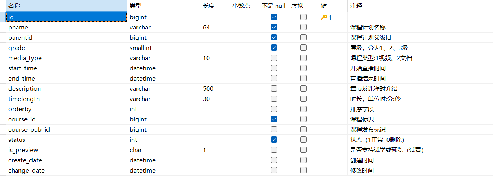

本模块主要是对学成在线项目的课程信息做管理，包括了课程的查询，增加等内容
模块的需求分析
什么是需求分析
- 百度百科对需求分析的定义如下：
需求分析也称为软件需求分析、系统需求分析或需求分析工程等，是开发人员经过深入细致的调研和分析，准确理解用户和项目的功能、性能、可靠性等具体要求，将用户非形式的需求表述转化为完整的需求定义，从而确定系统必须做什么的过程。
-
简单理解就是要搞清楚问题域，问题域就是用户的需求，软件要为用户解决什么问题，实现哪些功能，满足什么样的性能要求。
-
如何作需求分析
-
首先确认用户需求
-
用户需求即用户的原始需求。通过用户访谈、问卷调查、开会讨论、查阅资料等调研手段梳理用户的原始需求。
产品人员根据用户需求会绘制界面原型，通过界面原型再和用户确认需求。
-
-
确认关键问题
-
用户的原始需求可能 是含糊不清的，需求分析要从繁杂的问题中梳理出关键问题。比如：教学机构的老师想要将课程发布到网上，这是原始需求，根据这个用户需求我们需要进行扩展分析，扩展出几下几点：
- 课程发布需要发布哪些信息
- 如果发布了不良信息怎么办？
- 课程发布后用户怎么查看课程？
-
例如：课程发布需要课程名称、课程介绍、课程价格、课程图片、师资等信息。继续延申分析：这么多课程信息进行归类，方便用户编辑，分为课程基本信息、课程营销信息、课程师资等信息。
-
按照这样的思路对用户需求逐项分析，梳理出若干问题，再从中找到关键问题。比如：上边对课程信息分类后，哪些是关键信息，课程名称、课程图片、课程介绍等基本信息为关键信息，所以发布课程的第一步要编写课程基本信息。
-
找到了关键问题，下一步就可以进行数据建模，创建课程基本信息表，并设计其中的字段。
-
-
梳理业务流程
- 业务流程是由一个或多个用户参与完成为了完成一个目标所进行的一系列的业务操作，不论是整个系统还是一个模块通常首先分析核心的业务流程，比如：内容管理模块的核心业务流程是课程发布，本项目的核心业务流程是学生选课学习流程。
-
数据建模
- 数据建模要根据分析的关键问题将其相关的信息全部建模。比如：根据发布课程的用户需求，可创建课程基本信息表、课程营销信息表、课程师资表、课程发布记录表、课程审核记录表等。
-
编写需求规格说明书
-
需求分析阶段的成果物是需求分析规格说明书，针对每一个问题编写需求用例，需求用例包括：功能名称、功能描述、参与者、基本事件流程、可选事件流、数据描述、前置条件、后置条件等内容。
-
这里以添加课程的需求为例：
项目 添加课程 功能名称 添加课程 功能描述 添加课程基本信息 参与者 教学机构管理员 前置条件 教学机构管理只允许向自己机构添加课程 拥有添加课程的权限 基本事件流程 1、登录教学机构平台 2、进入课程列表页面 3、点击添加课程按钮进入添加课程界面 4、填写课程基本信息 5、点击提交。 可选事件流程 成功：提示添加成功，跳转到课程营销信息添加界面 失败：提示具体的失败信息，用户根据失败信息进行修改。 数据描述 课程基本信息：课程id、课程名称、课程介绍、课程大分类、课程小分类、课程等级、课程图片、所属机构、课程创建时间、课程修改时间、课程状态 后置条件 向课程基本信息插入一条记录 补充说明
-
-
模块介绍
-
内容管理这个词存在于很多软件系统，什么是内容管理 ？
-
百度百科解释如下：
内容管理系统（content management system，CMS），是一种位于WEB前端（Web 服务器）和后端办公系统或流程（内容创作、编辑）之间的软件系统。内容的创作人员、编辑人员、发布人员使用内容管理系统来提交、修改、审批、发布内容。这里指的“内容”可能包括文件、表格、图片、数据库中的数据甚至视频等一切你想要发布到Internet、Intranet以及Extranet网站的信息。
-
本项目作为一个大型的在线教育平台，其内容管理模块主要对课程及相关内容进行管理，包括：课程的基本信息、课程图片、课程师资信息、课程的授课计划、课程视频、课程文档等内容的管理。
业务流程
-
内容管理的业务由教学机构人员和平台的运营人员共同完成。
-
教学机构人员的业务流程如下：
- 登录教学机构。
- 维护课程信息，添加一门课程需要编辑课程的基本信息、上传课程图片、课程营销信息、课程计划、上传课程视频、课程师资信息等内容。
- 课程信息编辑完成，通过课程预览确认无误后提交课程审核。
- 待运营人员对课程审核通过后方可进行课程发布。
-
运营人员的业务流程如下：
- 查询待审核的课程信息。
- 审核课程信息。
- 提交审核结果。
-
-
下图是课程编辑与发布的整体流程

界面原型
- 产品工程师根据用户需求制作产品界面原型，开发工程师除了根据用户需求进行需求分析以外，还会根据界面原型上的元素信息进行需求分析。
数据模型
-
数据模型就是对应的数据表的设计，内容管理模块涉及9张基础表，如下所示：

创建模块工程
模块工程结构
-
在第一章节创建了项目的父工程以及项目基础工程，如下图：

-
下面就要创建内容管理模块的工程结构。本项目是一个前后端分离项目，前端与后端开发人员之间主要依据接口进行开发。下图是前后端交互的流程图：
- 前端请求后端服务提供的接口。（通常为http协议 ）
- 后端服务的控制层Controller接收前端的请求。
- Contorller层调用Service层进行业务处理。
- Service层调用Dao持久层对数据持久化。

-
整个流程分为前端、接口层和业务层三部分。故模块工程的结构如下所示：

- xuecheng-plus-content-api：接口工程，为前端提供接口。
- xuecheng-plus-content-service: 业务工程，为接口工程提供业务支撑。
- xuecheng-plus-content-model: 数据模型工程，存储数据模型类、数据传输类型等。
-
将项目父工程及项目基础工程与之结合可得下图：

- xuecheng-plus-content：内容管理模块工程，负责聚合xuecheng-plus-content-api、xuecheng-plus-content-service、xuecheng-plus-content-model。
-
聚合项目又称为多模块项目，这种结构的目的是为了统一构建项目，也就是说我对根项目的任何mvn 命令操作，都会相应的执行到每一个被聚合的module项目中。
- 聚合项目，根模块的打包方式必须为pom。
- 通过
<module>标签指定被聚合的模块。 - 被聚合的模块根本无法感知到根模块的存在。
-
父子模块这种项目结构，本质上就是继承关系。聚合模块结构没有上下级区分，但这里的父子模块就要区分上下级了（这里的上下级不是指文件目录的上下级），子模块会继承父模块的相关依赖配置。
-
父模块的打包方式必须为pom。
-
子模块需要通过
<parent>标签指定父模块的坐标。然后自由选择需要的依赖，如果此依赖在父模块已指定版本，则子模块不需要再管理版本。 -
父模块的groupId和version会传递到子模块，父子模块作为一个整体，子模块不需要再声明，仅需要指定自己独有的artifactId即可，当然如果你依赖的父模块和你的项目不是同一个groupId时，你也可以指定子模块的groupId和version；
-
父模块的依赖配置会传递到子模块，子模块不需要再单独引入依赖；
-
父模块可以通过
<dependencyManagement>管理依赖的版本，子模块可以自由灵活的选择需要的依赖，不需要再关心版本的问题。 -
父子模块正好相反，父模块根本无法感知到哪个子模块把它当作爸爸。
-
-
最佳实战
- 在我们实际开发中，一般都是将聚合和父子这两种关系混合使用
- 不论父子模块还是聚合模块，根模块的打包方式都必须是pom，下面的模块可以是jar或者war这两种打包方式。
- 聚合模块这种项目结构，仅仅是为了方便统一管理操作所有的模块。根模块和它内部
<module>标签内的模块是一个整体，项目目录层级上可以不要求一定上下级，但必须保持一定的层级联系。你不能用自己创建的项目去管理操作spring的项目。 - 父子模块这种项目结构，仅仅是为了方便子模块对依赖的管理，子模块通过
<parent>标签，引入父模块的配置去约束子模块的依赖版本。也可以抽出共同的依赖给到父模块，子模块去继承它，减少每个子模块冗余的配置。项目层级没有要求，你可以引入任意的依赖当作父模块，比如spring-boot-starter。
创建模块工程
-
首先在项目根目录创建内容管理模块的父工程xuecheng-plus-content

-
创建完成，只保留pom.xml文件，删除多余的文件。内容管理父工程的主要职责是聚合内容管理接口和内容管理接口实现两个工程，它的父工程是xuecheng-plus-parent。pom.xml如下
1 2 3 4 5 6 7 8 9 10 11 12 13 14 15 16 17 18 19 20 21 22 23 24 25<?xml version="1.0" encoding="UTF-8"?> <project xmlns="http://maven.apache.org/POM/4.0.0" xmlns:xsi="http://www.w3.org/2001/XMLSchema-instance" xsi:schemaLocation="http://maven.apache.org/POM/4.0.0 https://maven.apache.org/xsd/maven-4.0.0.xsd"> <modelVersion>4.0.0</modelVersion> <!-- 父工程为项目父工程xuecheng-plus-parent --> <parent> <artifactId>xuecheng-plus-parent</artifactId> <groupId>com.xuecheng</groupId> <version>0.0.1-SNAPSHOT</version> <relativePath>../xuecheng-plus-parent</relativePath> </parent> <artifactId>xuecheng-plus-content</artifactId> <name>xuecheng-plus-content</name> <description>xuecheng-plus-content</description> <!-- 其本身既是内容管理其他模块的父工程也是模块聚合的跟工程 --> <!-- 所以打包方式必须为pom --> <packaging>pom</packaging> <!-- 聚合的模块 --> <modules> <module>xuecheng-plus-content-api</module> <module>xuecheng-plus-content-model</module> <module>xuecheng-plus-content-service</module> </modules> </project> -
由于xuecheng-plus-content-api、xuecheng-plus-content-service及xuecheng-plus-content-model三个工程还没有创建所以modules报错。
-
-
在xuecheng-plus-content下创建xuecheng-plus-content-model数据模型工程。

-
创建完成，只保留包和pom.xml文件 ，删除多余的文件。修改pom.xml文件
1 2 3 4 5 6 7 8 9 10 11 12 13 14 15 16 17 18 19 20 21 22 23<?xml version="1.0" encoding="UTF-8"?> <project xmlns="http://maven.apache.org/POM/4.0.0" xmlns:xsi="http://www.w3.org/2001/XMLSchema-instance" xsi:schemaLocation="http://maven.apache.org/POM/4.0.0 https://maven.apache.org/xsd/maven-4.0.0.xsd"> <modelVersion>4.0.0</modelVersion> <parent> <artifactId>xuecheng-plus-content</artifactId> <groupId>com.xuecheng</groupId> <version>0.0.1-SNAPSHOT</version> </parent> <artifactId>xuecheng-plus-content-model</artifactId> <!-- 基本所有工程都会依赖于基础工程 --> <!-- 引入基础工程依赖 --> <dependencies> <dependency> <groupId>com.xuecheng</groupId> <artifactId>xuecheng-plus-base</artifactId> <version>0.0.1-SNAPSHOT</version> </dependency> </dependencies> </project>
-
-
在xuecheng-plus-content下创建xuecheng-plus-content-service接口实现工程。

-
创建完成，只保留包(即src包)和pom.xml文件 ，删除多余的文件，pom.xml如下：
1 2 3 4 5 6 7 8 9 10 11 12 13 14 15 16 17 18 19<?xml version="1.0" encoding="UTF-8"?> <project xmlns="http://maven.apache.org/POM/4.0.0" xmlns:xsi="http://www.w3.org/2001/XMLSchema-instance" xsi:schemaLocation="http://maven.apache.org/POM/4.0.0 https://maven.apache.org/xsd/maven-4.0.0.xsd"> <modelVersion>4.0.0</modelVersion> <parent> <artifactId>xuecheng-plus-content</artifactId> <groupId>com.xuecheng</groupId> <version>0.0.1-SNAPSHOT</version> </parent> <artifactId>xuecheng-plus-content-service</artifactId> <dependencies> <dependency> <groupId>com.xuecheng</groupId> <artifactId>xuecheng-plus-content-model</artifactId> <version>0.0.1-SNAPSHOT</version> </dependency> </dependencies> </project>
-
-
在xuecheng-plus-content下创建xuecheng-plus-content-api接口工程。

-
创建完成，只保留包(即src包)和pom.xml文件 ，删除多余的文件，pom.xml如下：
1 2 3 4 5 6 7 8 9 10 11 12 13 14 15 16 17 18 19 20 21 22<?xml version="1.0" encoding="UTF-8"?> <project xmlns="http://maven.apache.org/POM/4.0.0" xmlns:xsi="http://www.w3.org/2001/XMLSchema-instance" xsi:schemaLocation="http://maven.apache.org/POM/4.0.0 https://maven.apache.org/xsd/maven-4.0.0.xsd"> <modelVersion>4.0.0</modelVersion> <parent> <artifactId>xuecheng-plus-content</artifactId> <groupId>com.xuecheng</groupId> <version>0.0.1-SNAPSHOT</version> </parent> <artifactId>xuecheng-plus-content-api</artifactId> <!-- 引入service包会传递依赖项目基础工程 --> <dependencies> <dependency> <groupId>com.xuecheng</groupId> <artifactId>xuecheng-plus-content-service</artifactId> <version>0.0.1-SNAPSHOT</version> </dependency> </dependencies> </project> -
xuecheng-plus-content-api接口工程的父工程是xuecheng-plus-content，它依赖了xuecheng-plus-base基础工程。
-
-
到此内容管理模块的四个工程创建完毕，工程结构图如下：

课程查询
需求分析
业务流程
- 教学机构人员点击课程管理首先进入课程查询界面
- 在课程进行列表查询页面输入查询条件查询课程信息
- 当不输入查询条件时输入全部课程信息。
- 输入查询条件查询符合条件的课程信息。
- 约束：本教学机构查询本机构的课程信息。
数据模型
-
课程查询功能涉及的数据表：课程基本信息表

-
下边从查询条件、查询列表两个方面分析数据模型
-
查询条件：
-
包括：课程名称、课程审核状态、课程发布状态
-
课程名称：可以模糊搜索
-
课程审核状态：未提交、已提交、审核通过、审核未通过
-
课程发布状态：未发布、已发布、已下线
-
因为是分页查询所以查询条件中还要包括当前页码、每页显示记录数。
-
-
查询结果：
- 查询结果中包括：课程id、课程名称、任务数、创建时间、是否付费、审核状态、类型，操作
- 任务数：该课程所包含的课程计划数，即课程章节数。
- 是否付费：课程包括免费、收费两种。
- 类型：录播、直播。
- 因为是分页查询所以查询结果中还要包括总记录数、当前页、每页显示记录数。
-
创建数据库表及PO类型
创建数据库表
- 黑马所给的虚拟机中已经将数据库表全都建好，无需我们自己建表
- 若是想要自己建表，可以直接执行其给的sql语句文件。
生成PO类
-
PO即持久对象(Persistent Object)，它们是由一组属性和属性的get和set方法组成，PO对应于数据库的表。
-
在开发持久层代码时需要根据数据表编写PO类，在实际开发中通常使用代码生成器（工具）生成PO类的代码。由于在需求分析阶段对数据模型进行分析，PO类对应于数据模型，所以在需求分析阶段即可使用工具生成PO类，为下面的接口定义准备好模型类。
-
在企业开发中通常使用代码生成工具去自动生成这些文件，本项目使用mybatis-plus的generator工程生成PO类、Mapper接口、Mapper的xml文件，地址在：generator工程所在地址
-
本项目可直接使用黑马提供的xuecheng-plus-generator工程，将其解压后，直接复制到项目的根目录下，并在idea中打开xuecheng-plus-generator工程的pom.xml，右键 点击“Add as Maven Project” 自动识别maven工程，即可。
-
本次生成内容管理模块的PO类、Mapper接口和Mapper的xml文件 ，找到ContentCodeGenerator类，如下图：

-
修改ContentCodeGenerator类中的信息，包括：数据库地址、数据库账号、数据库密码、生成的表、生成路径，如下：
1 2 3 4 5 6 7 8 9 10 11 12 13 14 15 16 17 18 19 20 21 22 23 24 25 26 27 28 29 30 31//数据库账号 private static final String DATA_SOURCE_USER_NAME = "root"; //数据库密码 private static final String DATA_SOURCE_PASSWORD = "mysql"; //生成的表 private static final String[] TABLE_NAMES = new String[]{ "course_base", "course_market", "course_teacher", "course_category", "teachplan", "teachplan_media", "course_publish", "course_publish_pre" }; // TODO 默认生成entity，需要生成DTO修改此变量 // 一般情况下要先生成 DTO类 然后修改此参数再生成 PO 类。 private static final Boolean IS_DTO = false; public static void main(String[] args) { .... //生成路径 gc.setOutputDir(System.getProperty("user.dir") + "/xuecheng-plus-generator/src/main/java"); .... // 数据库配置 DataSourceConfig dsc = new DataSourceConfig(); dsc.setDbType(DbType.MYSQL); dsc.setUrl("jdbc:mysql://192.168.101.65:3306/xcplus_" + SERVICE_NAME+"166" + "?serverTimezone=UTC&useUnicode=true&useSSL=false&characterEncoding=utf8"); ... -
修改完成，执行该类的main方法，自动生成content包，如下：

-
在该包下自动生成了内容管理模块的controller、mapper、po及service相关代码，这里我们只需要po类。将po类拷贝到model工程中的po包下。
-
打开一个PO类发现编译报错，这是缺少依赖包导致，本项目使用的持久层框架是MyBatisPlus，在生成的po类中加了一些MyBatisPlus框架的注解，这里需要添加MyBatisPlus框架的依赖，消除错误。下边在model工程添加依赖
1 2 3 4 5 6<!--存在mybatisplus注解添加相关注解保证不报错--> <dependency> <groupId>com.baomidou</groupId> <artifactId>mybatis-plus-annotation</artifactId> <version>${mybatis-plus-boot-starter.version}</version> </dependency>
-
设计接口
接口设计分析
-
设计一个接口需要包括以下几个方面：
-
协议
-
通常协议采用HTTP，查询类接口通常为get或post，查询条件较少的使用get，较多的使用post。本接口使用 http post。
-
还要确定content-type，参数以什么数据格式提交，结果以什么数据格式响应。一般情况没有特殊情况结果以json 格式响应。
-
-
分析请求参数
- 根据前边对数据模型的分析，请求参数为：课程名称、课程审核状态、当前页码、每页显示记录数。根据分析的请求参数定义模型类。
-
分析响应结果
-
根据前边对数据模型的分析，响应结果为数据列表加一些分页信息（总记录数、当前页、每页显示记录数）。
-
数据列表中数据的属性包括：课程id、课程名称、任务数、创建时间、审核状态、类型。
[!CAUTION]
注意：查询结果中的审核状态为数据字典中的代码字段，前端会根据审核状态代码找到对应的名称显示。根据分析的响应结果定义模型类。
-
-
分析完成，使用SpringBoot注解开发一个Http接口。
-
使用接口文档工具查看接口的内容。
-
接口中调用Service方法完成业务处理。
-
-
接口请求示例
1 2 3 4 5 6 7 8 9 10 11 12 13 14 15 16 17 18 19 20 21 22 23 24 25 26 27 28 29 30 31 32 33 34 35 36 37 38 39 40 41 42 43 44 45POST /content/course/list?pageNo=2&pageSize=1 Content-Type: application/json ###请求参数 { "auditStatus": "202002", "courseName": "", "publishStatus":"" } ###成功响应结果 { "items": [ { "id": 26, "companyId": 1232141425, "companyName": null, "name": "spring cloud实战", "users": "所有人", "tags": null, "mt": "1-3", "mtName": null, "st": "1-3-2", "stName": null, "grade": "200003", "teachmode": "201001", "description": "本课程主要从四个章节进行讲解： 1.微服务架构入门 2.spring cloud 基础入门 3.实战Spring Boot 4.注册中心eureka。", "pic": "https://cdn.educba.com/academy/wp-content/uploads/2018/08/Spring-BOOT-Interview-questions.jpg", "createDate": "2019-09-04 09:56:19", "changeDate": "2021-12-26 22:10:38", "createPeople": null, "changePeople": null, "auditStatus": "202002", "auditMind": null, "auditNums": 0, "auditDate": null, "auditPeople": null, "status": 1, "coursePubId": null, "coursePubDate": null } ], "counts": 23, "page": 2, "pageSize": 1 }3.3.2 定义模型类
-
根据接口分析需要定义模型类接收请求的参数，并定义模型类用于响应结果。
-
分页查询模型类
-
由于分页查询这一类的接口在项目较多，这里针对分页查询的参数（当前页码、每页显示记录数）单独在xuecheng-plus-base基础工程中定义。
1 2 3 4 5 6 7 8 9 10 11 12 13 14 15 16 17 18 19 20 21 22 23 24package com.xuecheng.base.model; import lombok.Data; import lombok.ToString; import lombok.extern.java.Log; /** * @description 分页查询通用参数 * @author Mr.M * @date 2022/9/6 14:02 * @version 1.0 */ @Data @AllArgsConstructor @NoArgsConstructor public class PageParams { //当前页码 @ApiModelProperty("当前页码") private Long pageNo = 1L; //每页记录数默认值 @ApiModelProperty("每页记录数") private Long pageSize = 10L; } -
由于上边类中用到了lombok注解所以在base工程添加依赖包如下：
1 2 3 4 5 6<dependencies> <dependency> <groupId>org.projectlombok</groupId> <artifactId>lombok</artifactId> </dependency> </dependencies>
-
-
查询条件模型类
-
除了分页查询参数，剩下的就是课程查询的特有参数，此时需要在内容管理的model工程中定义课程查询参数模型类。
1 2 3 4 5 6 7 8 9 10 11 12 13 14 15 16 17 18 19 20 21package com.xuecheng.content.model.dto; import io.swagger.annotations.ApiModelProperty; import lombok.Data; /** * @description 课程查询参数Dto */ @Data public class QueryCourseParamsDto { //审核状态 @ApiModelProperty("审核状态") private String auditStatus; //课程名称 @ApiModelProperty("课程名称") private String courseName; //发布状态 @ApiModelProperty("发布状态") private String publishStatus; }
-
-
响应模型类
-
根据接口分析，下边定义响应结果模型类。针对分页查询结果经过分析也存在固定的数据和格式，所以在base工程定义一个基础的模型类。
1 2 3 4 5 6 7 8 9 10 11 12 13 14 15 16 17 18 19 20 21 22 23 24 25 26 27 28 29package com.xuecheng.base.model; import lombok.AllArgsConstructor; import lombok.Data; import lombok.NoArgsConstructor; import java.io.Serializable; import java.util.List; /** * 分页查询结果模型类 */ @Data @NoArgsConstructor @AllArgsConstructor public class PageResult<T> implements Serializable { // 数据列表 private List<T> items; //总记录数 private long counts; //当前页码 private long page; //每页记录数 private long pageSize; } -
此模型类中定义了List属性，此属性存放数据列表，且支持泛型，课程查询接口的返回类型可以是此模型类型。课程查询接口使用的泛型为相应的CourseBase，即生成的课程基本信息表的PO类。
-
-
-
现在项目中有两类模型类：DTO数据传输对象、PO持久化对象，DTO用于接口层向业务层之间传输数据，PO用于业务层与持久层之间传输数据，有些项目还会设置VO对象，VO对象用在前端与接口层之间传输数据，如下图：

-
当前端有多个平台且接口存在差异时就需要设置VO对象用于前端和接口层传输数据。比如：
-
课程列表查询接口，根据需求用户在手机端也要查询课程信息，此时课程查询接口是否需要编写手机端和PC端两个接口呢？如果用户要求通过手机和PC的查询条件或查询结果不一样，此时就需要定义两个Controller课程查询接口，每个接口定义VO对象与前端传输数据。
-
手机查询：根据课程状态查询，查询结果只有课程名称和课程状态。
-
PC查询：可以根据课程名称、课程状态、课程审核状态等条件查询，查询结果也比手机查询结果内容多。
-
-
此时，Service业务层尽量提供一个业务接口，即使两个前端接口需要的数据不一样，Service可以提供一个最全查询结果，由Controller进行数据整合。如下图：

-
如果前端的接口没有多样性且比较固定，此时可以取消VO，只用DTO即可。如下图：

-
定义接口
-
根据分析，此接口提供 HTTP post协议，查询条件以json格式提交，响应结果为json 格式。可使用SpringBoot注解在Controller类中实现。即为（@RequestBody和@ResponceBody）
-
首先在api工程中添加依赖
1 2 3 4 5 6 7 8 9 10 11 12 13 14 15 16 17 18 19 20 21 22 23 24 25 26 27 28 29 30 31 32 33 34 35 36 37 38 39 40 41 42 43 44 45 46<dependencies> <dependency> <groupId>com.xuecheng</groupId> <artifactId>xuecheng-plus-content-service</artifactId> <version>0.0.1-SNAPSHOT</version> </dependency> <!--cloud的基础环境包--> <dependency> <groupId>org.springframework.cloud</groupId> <artifactId>spring-cloud-context</artifactId> </dependency> <!-- Spring Boot 的 Spring Web MVC 集成 --> <dependency> <groupId>org.springframework.boot</groupId> <artifactId>spring-boot-starter-web</artifactId> </dependency> <!-- 排除 Spring Boot 依赖的日志包冲突 --> <dependency> <groupId>org.springframework.boot</groupId> <artifactId>spring-boot-starter</artifactId> <exclusions> <exclusion> <groupId>org.springframework.boot</groupId> <artifactId>spring-boot-starter-logging</artifactId> </exclusion> </exclusions> </dependency> <dependency> <groupId>org.springframework.boot</groupId> <artifactId>spring-boot-starter-validation</artifactId> </dependency> <!-- Spring Boot 集成 log4j2 --> <dependency> <groupId>org.springframework.boot</groupId> <artifactId>spring-boot-starter-log4j2</artifactId> </dependency> <!-- Spring Boot 集成 swagger --> <dependency> <groupId>com.spring4all</groupId> <artifactId>swagger-spring-boot-starter</artifactId> <version>1.9.0.RELEASE</version> </dependency> </dependencies> -
定义controller方法
- 说明：pageParams分页参数通过url的key/value传入，queryCourseParams通过json数据传入，使用@RequestBody注解将json转成QueryCourseParamsDto对象。
1 2 3 4 5 6 7 8 9 10 11 12 13 14 15 16 17 18 19 20 21 22 23 24package com.xuecheng.content.api; import com.xuecheng.base.model.PageParams; import com.xuecheng.base.model.PageResult; import com.xuecheng.content.model.dto.QueryCourseParamsDto; import io.swagger.annotations.Api; import io.swagger.annotations.ApiOperation; import org.springframework.web.bind.annotation.PostMapping; import org.springframework.web.bind.annotation.RequestBody; import org.springframework.web.bind.annotation.RestController; /** * @description 课程信息编辑接口 * @author Mr.M * @date 2022/9/6 11:29 * @version 1.0 */ @RestController public class CourseBaseInfoController { @PostMapping("/course/list") public PageResult<CourseBase> list(PageParams pageParams, @RequestBody QueryCourseParamsDto queryCourseParams){ return null; } } -
定义启动类
1 2 3 4 5 6 7 8 9 10 11 12 13 14 15package com.xuecheng; import com.spring4all.swagger.EnableSwagger2Doc; import org.springframework.boot.SpringApplication; import org.springframework.boot.autoconfigure.SpringBootApplication; import org.springframework.scheduling.annotation.EnableScheduling; @SpringBootApplication //该注解用于使swagger接口文档生效 @EnableSwagger2Doc public class ContentApplication { public static void main(String[] args) { SpringApplication.run(ContentApplication.class, args); } } -
添加配置文件
-
创建 log4j2-dev.xml、bootstrap.yml文件。
-
bootstrap.yml内容如下：
1 2 3 4 5 6 7 8 9 10 11 12 13 14 15 16 17 18server: servlet: context-path: /content #配置url路径中localhost后的根路径 port: 63040 #微服务配置 spring: application: name: content-api #数据库配置 datasource: driver-class-name: com.mysql.cj.jdbc.Driver #这里要将数据库名，数据库用户及密码修改为自己的 url: jdbc:mysql://192.168.101.65:3306/xcplus_content?serverTimezone=UTC&userUnicode=true&useSSL=false& username: root password: mysql # 日志文件配置路径 logging: config: classpath:log4j2-dev.xml -
log4j2-dev.xml内容如下：
- 这种内容可直接到网上粘贴复制，无需自己编写
1 2 3 4 5 6 7 8 9 10 11 12 13 14 15 16 17 18 19 20 21 22 23 24 25 26 27 28 29 30 31 32 33 34 35 36 37 38 39 40 41 42 43 44 45 46 47 48 49 50 51 52 53 54 55 56 57 58 59 60 61 62 63 64 65 66 67 68 69 70 71 72 73 74 75 76 77 78 79 80 81 82 83 84 85<?xml version="1.0" encoding="UTF-8"?> <Configuration monitorInterval="180" packages=""> <properties> <property name="logdir">logs</property> <property name="PATTERN">%date{YYYY-MM-dd HH:mm:ss,SSS} %level [%thread][%file:%line] - %msg%n%throwable</property> </properties> <Appenders> <Console name="Console" target="SYSTEM_OUT"> <PatternLayout pattern="${PATTERN}"/> </Console> <RollingFile name="ErrorAppender" fileName="${logdir}/error.log" filePattern="${logdir}/$${date:yyyy-MM-dd}/error.%d{yyyy-MM-dd-HH}.log" append="true"> <PatternLayout pattern="${PATTERN}"/> <ThresholdFilter level="ERROR" onMatch="ACCEPT" onMismatch="DENY"/> <Policies> <TimeBasedTriggeringPolicy interval="1" modulate="true" /> </Policies> </RollingFile> <RollingFile name="DebugAppender" fileName="${logdir}/info.log" filePattern="${logdir}/$${date:yyyy-MM-dd}/info.%d{yyyy-MM-dd-HH}.log" append="true"> <PatternLayout pattern="${PATTERN}"/> <ThresholdFilter level="DEBUG" onMatch="ACCEPT" onMismatch="DENY"/> <Policies> <TimeBasedTriggeringPolicy interval="1" modulate="true" /> </Policies> </RollingFile> <!--异步appender--> <Async name="AsyncAppender" includeLocation="true"> <AppenderRef ref="ErrorAppender"/> <AppenderRef ref="DebugAppender"/> </Async> </Appenders> <Loggers> <!--过滤掉spring和mybatis的一些无用的debug信息 <logger name="org.springframework" level="INFO"> </logger> <logger name="org.mybatis" level="INFO"> </logger>--> <logger name="cn.itcast.wanxinp2p.consumer.mapper" level="DEBUG"> </logger> <logger name="springfox" level="INFO"> </logger> <logger name="org.apache.http" level="INFO"> </logger> <logger name="com.netflix.discovery" level="INFO"> </logger> <logger name="RocketmqCommon" level="INFO" > </logger> <logger name="RocketmqRemoting" level="INFO" > </logger> <logger name="RocketmqClient" level="WARN"> </logger> <logger name="org.dromara.hmily" level="WARN"> </logger> <logger name="org.dromara.hmily.lottery" level="WARN"> </logger> <logger name="org.dromara.hmily.bonuspoint" level="WARN"> </logger> <!--OFF 0--> <!--FATAL 100--> <!--ERROR 200--> <!--WARN 300--> <!--INFO 400--> <!--DEBUG 500--> <!--TRACE 600--> <!--ALL Integer.MAX_VALUE--> <Root level="DEBUG" includeLocation="true"> <AppenderRef ref="AsyncAppender"/> <AppenderRef ref="Console"/> <AppenderRef ref="DebugAppender"/> </Root> </Loggers> </Configuration>
-
-
这里使用bootstrap.yaml文件进行配置而不是application.yaml进行配置
- 加载顺序：
bootstrap.yaml在 Spring Boot 启动过程中比application.yaml更早加载。Bootstrap 配置主要用于初始化一些基础配置，比如服务注册中心的地址、配置中心的地址等，这些是在应用开始起步前就需要的配置。application.yaml文件则在应用的上下文加载后进行加载，主要用于应用的具体配置。
- 微服务的特性：
- 在微服务架构中，服务之间通常会进行注册和发现，因此
bootstrap.yaml更适合放置与服务注册、配置中心等相关的配置。 - 使用
bootstrap.yaml可以更清晰地将应用级配置和系统级配置分开，使得项目结构更加清晰和易于管理。
- 在微服务架构中，服务之间通常会进行注册和发现，因此
- 加载顺序：
-
-
下边启动服务，测试接口是否可以正常请求
-
访问swagger接口文档，查看接口接口信息

-
通过swagger提供的方法进行接口的测试，点击下图中的Try it out即可

-
接口测试过程中我们发现，LocalDateTime类型的数据转json后数据格式并不是我们要的年月日时分秒不是我们想要的，如下图：

-
解决办法：在base工程com.xuecheng.base.config包下加配置LocalDateTimeConfig 类实现转json时字符串与LocalDateTime类型的转换。
1 2 3 4 5 6 7 8 9 10 11 12 13 14 15 16 17 18 19 20 21 22 23 24 25 26 27 28 29 30 31 32 33 34 35 36 37 38 39 40 41 42 43 44 45 46import com.fasterxml.jackson.datatype.jsr310.deser.LocalDateTimeDeserializer; import com.fasterxml.jackson.datatype.jsr310.ser.LocalDateTimeSerializer; import org.springframework.boot.autoconfigure.jackson.Jackson2ObjectMapperBuilderCustomizer; import org.springframework.context.annotation.Bean; import org.springframework.context.annotation.Configuration; import org.springframework.http.converter.json.Jackson2ObjectMapperBuilder; import java.time.LocalDateTime; import java.time.format.DateTimeFormatter; /** * 日期在序列化时需要指定格式 */ @Configuration public class LocalDateTimeConfig { /* * 序列化内容 * LocalDateTime -> String * 服务端返回给客户端内容 * */ @Bean public LocalDateTimeSerializer localDateTimeSerializer() { return new LocalDateTimeSerializer(DateTimeFormatter.ofPattern("yyyy-MM-dd HH:mm:ss")); } /* * 反序列化内容 * String -> LocalDateTime * 客户端传入服务端数据 * */ @Bean public LocalDateTimeDeserializer localDateTimeDeserializer() { return new LocalDateTimeDeserializer(DateTimeFormatter.ofPattern("yyyy-MM-dd HH:mm:ss")); } // 配置 @Bean public Jackson2ObjectMapperBuilderCustomizer jackson2ObjectMapperBuilderCustomizer() { return builder -> { builder.serializerByType(LocalDateTime.class, localDateTimeSerializer()); builder.deserializerByType(LocalDateTime.class, localDateTimeDeserializer()); }; } }
-
-
-
Swagger介绍
-
在前后端分离开发中通常由后端程序员设计接口，完成后需要编写接口文档，最后将文档交给前端工程师，前端工程师参考文档进行开发。可以通过一些工具快速生成接口文档 ，本项目通过Swagger生成接口在线文档 。
-
什么是Swagger？
OpenAPI规范（OpenAPI Specification 简称OAS）是Linux基金会的一个项目，试图通过定义一种用来描述API格式或API定义的语言，来规范RESTful服务开发过程，并且已经发布并开源在github上。swagger项目地址
- Swagger是全球最大的OpenAPI规范（OAS）API开发工具框架，Swagger是一个在线接口文档的生成工具，前后端开发人员依据接口文档进行开发。swagger官网
-
Spring Boot 可以集成Swagger，Swaager根据Controller类中的注解生成接口文档 ，只要添加Swagger的依赖和配置信息即可使用它。SpringBoot集成Swagger步骤如下：
-
在想要实现的模块(课程查询接口在API中，故此处为API工程)中添加swagger-spring-boot-starter依赖
1 2 3 4 5<!-- Spring Boot 集成 swagger --> <dependency> <groupId>com.spring4all</groupId> <artifactId>swagger-spring-boot-starter</artifactId> </dependency> -
在 bootstrap.yml(application.yaml也可)中配置swagger的扫描包路径及其它信息，base-package为扫描的包路径，扫描Controller类。
1 2 3 4 5 6swagger: title: "学成在线内容管理系统" description: "内容系统管理系统对课程相关信息进行管理" base-package: com.xuecheng.content enabled: true version: 1.0.0 -
在启动类中添加@EnableSwagger2Doc注解，启动服务即可访问。
-
-
接口文档中会有关于接口参数的说明，在模型类上也可以添加注解对模型类中的属性进行说明，方便对接口文档的阅读。比如：下边标红的属性名称，可以通过swaager注解标注一个中文名称，方便阅读接口文档。

-
标注的方法非常简单：找到模型类，在属性上添加注解：
1 2 3 4 5 6 7 8 9 10 11 12 13 14 15 16 17 18public class PageParams { ... @ApiModelProperty("当前页码") private Long pageNo = 1L; @ApiModelProperty("每页记录数默认值") private Long pageSize = 30L; ... public class QueryCourseParamsDto { //审核状态 @ApiModelProperty("审核状态") private String auditStatus; //课程名称 @ApiModelProperty("课程名称") private String courseName; } -
重启服务，再次进入接口文档，如下图：

-
在Java类中添加Swagger的注解即可生成Swagger接口，常用Swagger注解如下
1 2 3 4 5 6 7 8 9 10 11@Api：修饰整个类，描述Controller的作用 @ApiOperation：描述一个类的一个方法，或者说一个接口 @ApiParam：单个参数描述 @ApiModel：用对象来接收参数 @ApiModelProperty：用对象接收参数时，描述对象的一个字段 @ApiResponse：HTTP响应其中1个描述 @ApiResponses：HTTP响应整体描述 @ApiIgnore：使用该注解忽略这个API @ApiError ：发生错误返回的信息 @ApiImplicitParam：一个请求参数 @ApiImplicitParams：多个请求参数
-
开发持久层
生成 mapper
- 本项目使用MyBatis-Plus开发持久层，需要创建PO类、Mapper接口、Mapper的xml文件，每个PO类对应数据库的每张表，每张表需要创建一个Mapper接口和Mapper的xml映射文件 。
- 下边将使用generator工程生成的mapper接口和mapper映射文件拷贝到service工程下的com/xuecheng/content/mapper的包下。
测试mapper
-
下边对mapper进行单元测试，测试course_base表的查询接口。
-
首先在service工程的pom.xml中添加依赖
1 2 3 4 5 6 7 8 9 10 11 12 13 14 15 16 17 18 19 20 21 22 23 24 25 26 27 28 29 30 31 32 33 34 35 36 37 38 39 40 41 42 43 44 45 46 47 48<dependencies> <dependency> <groupId>com.xuecheng</groupId> <artifactId>xuecheng-plus-content-model</artifactId> <version>0.0.1-SNAPSHOT</version> </dependency> <!-- MySQL 驱动 --> <dependency> <groupId>mysql</groupId> <artifactId>mysql-connector-java</artifactId> <scope>runtime</scope> </dependency> <!-- mybatis plus的依赖 --> <dependency> <groupId>com.baomidou</groupId> <artifactId>mybatis-plus-boot-starter</artifactId> </dependency> <dependency> <groupId>org.springframework.cloud</groupId> <artifactId>spring-cloud-context</artifactId> </dependency> <!-- Spring Boot 集成 Junit --> <dependency> <groupId>org.springframework.boot</groupId> <artifactId>spring-boot-starter-test</artifactId> <scope>test</scope> </dependency> <!-- 排除 Spring Boot 依赖的日志包冲突 --> <dependency> <groupId>org.springframework.boot</groupId> <artifactId>spring-boot-starter</artifactId> <exclusions> <exclusion> <groupId>org.springframework.boot</groupId> <artifactId>spring-boot-starter-logging</artifactId> </exclusion> </exclusions> </dependency> <!-- Spring Boot 集成 log4j2 --> <dependency> <groupId>org.springframework.boot</groupId> <artifactId>spring-boot-starter-log4j2</artifactId> </dependency> </dependencies> -
配置扫描mapper及分页插件，在com.xuecheng.content.config包下编写以下配置类：
1 2 3 4 5 6 7 8 9 10 11 12 13 14 15 16 17 18 19 20 21 22 23 24 25 26 27 28 29package com.xuecheng.content.config; import com.baomidou.mybatisplus.annotation.DbType; import com.baomidou.mybatisplus.autoconfigure.ConfigurationCustomizer; import com.baomidou.mybatisplus.extension.plugins.MybatisPlusInterceptor; import com.baomidou.mybatisplus.extension.plugins.inner.PaginationInnerInterceptor; import org.mybatis.spring.annotation.MapperScan; import org.springframework.context.annotation.Bean; import org.springframework.context.annotation.Configuration; /** * <P> * Mybatis-Plus 配置 * </p> */ @Configuration //若在每个mapper类上都加了@Mapper注解，就无需该扫描注解 @MapperScan("com.xuecheng.content.mapper") public class MybatisPlusConfig { /** * 定义分页拦截器 */ @Bean public MybatisPlusInterceptor mybatisPlusInterceptor() { MybatisPlusInterceptor interceptor = new MybatisPlusInterceptor(); interceptor.addInnerInterceptor(new PaginationInnerInterceptor(DbType.MYSQL)); return interceptor; } }-
分页插件的原理：
首先分页参数放到ThreadLocal中，拦截执行的sql，根据数据库类型添加对应的分页语句重写sql，例如：(select * from table where a) 转换为 (select count(*) from table where a)和(select * from table where a limit ,)计算出了total总条数、pageNum当前第几页、pageSize每页大小和当前页的数据，是否为首页，是否为尾页，总页数等。
-
-
单元测试所需要的配置文件
-
由于service包是一个工具包，没有启动类，故我们在进行单元测试的时候需要自行在测试包下添加相应的配置文件和启动类
-
在test/resources下创建 log4j2-dev.xml、bootstrap.yml，直接复制api工程下的即可。
-
编写启动类：单元测试工作在test目录，在test下添加启动类，直接复制api工程下的启动类即可。
-
编写测试类
1 2 3 4 5 6 7 8 9 10 11 12 13 14 15 16 17 18 19 20 21 22 23 24 25 26 27 28 29 30 31 32 33 34 35 36 37 38 39 40 41 42 43 44 45 46 47 48 49 50 51 52 53 54 55 56 57 58 59 60 61 62 63 64 65package com.xuecheng.content; import com.baomidou.mybatisplus.core.conditions.query.LambdaQueryWrapper; import com.baomidou.mybatisplus.extension.plugins.pagination.Page; import com.xuecheng.base.model.PageParams; import com.xuecheng.base.model.PageResult; import com.xuecheng.content.mapper.CourseBaseMapper; import com.xuecheng.content.model.dto.QueryCourseParamsDto; import com.xuecheng.content.model.po.CourseBase; import org.apache.commons.lang.StringUtils; import org.junit.jupiter.api.Assertions; import org.junit.jupiter.api.Test; import org.springframework.beans.factory.annotation.Autowired; import org.springframework.boot.test.context.SpringBootTest; import java.util.List; @SpringBootTest class CourseBaseMapperTests { @Autowired CourseBaseMapper courseBaseMapper; @Test void testCourseBaseMapper() { CourseBase courseBase = courseBaseMapper.selectById(74L); Assertions.assertNotNull(courseBase); //测试查询接口 LambdaQueryWrapper<CourseBase> queryWrapper = new LambdaQueryWrapper<>(); //查询条件 QueryCourseParamsDto queryCourseParamsDto = new QueryCourseParamsDto(); queryCourseParamsDto.setCourseName("java"); queryCourseParamsDto.setAuditStatus("202004"); queryCourseParamsDto.setPublishStatus("203001"); //拼接查询条件 //根据课程名称模糊查询 name like '%名称%' queryWrapper.like(StringUtils.isNotEmpty(queryCourseParamsDto.getCourseName()),CourseBase::getName,queryCourseParamsDto.getCourseName()); //根据课程审核状态 queryWrapper.eq(StringUtils.isNotEmpty(queryCourseParamsDto.getAuditStatus()),CourseBase::getAuditStatus,queryCourseParamsDto.getAuditStatus()); //分页参数 PageParams pageParams = new PageParams(); pageParams.setPageNo(1L);//页码 pageParams.setPageSize(3L);//每页记录数 Page<CourseBase> page = new Page<>(pageParams.getPageNo(), pageParams.getPageSize()); //分页查询E page 分页参数, @Param("ew") Wrapper<T> queryWrapper 查询条件 Page<CourseBase> pageResult = courseBaseMapper.selectPage(page, queryWrapper); //数据 List<CourseBase> items = pageResult.getRecords(); //总记录数 long total = pageResult.getTotal(); //准备返回数据 List<T> items, long counts, long page, long pageSize PageResult<CourseBase> courseBasePageResult = new PageResult<>(items, total, pageParams.getPageNo(), pageParams.getPageSize()); System.out.println(courseBasePageResult); } }
-
-
-
开发业务层
创建数据字典
-
课程基本信息查询的主要数据来源是课程基本信息表，这里有一个点需要注意，就是课程的审核状态、发布状态。
-
审核状态在查询条件和查询结果中都存在，审核状态包括：未审核、审核通过、审核未通过三种，下边思考一个问题：一个课程的审核状态如果是“审核未通过”那么在课程基本信息表记录“审核未通过”三个字合适吗？
-
如果将“审核未通过”五个字记录在课程基本信息表中，显示出来的审核状态就是“审核未通过”这五个字，看起来没有什么问题，如果有一天客户想要将审核未通过的记录在显示时改为“未通过”三个字，怎么办？
-
这时你可以需要批量处理数据库中记录了，写一个 update 语句，审核状态等于“审核未通过”的全部更新 为“未通过”。看起来解决了问题，如果有一天客户又让改了呢？和审核状态同类的有好多这样的信息，比如：课程状态、课程类型、用户类型等等，这一类数据有一个共同点就是它有一些分类项，且这些分类项较为固定。针对这些数据，为了提高系统的可扩展性，专门定义数据字典表去维护。
-
-
下边是课程审核状态的定义：每一项都由代码和名称组成。
1 2 3 4 5[ {"code":"202001","desc":"审核未通过"}, {"code":"202002","desc":"未审核"}, {"code":"202003","desc":"审核通过"} ]- 如果该课程的审核状态为审核未通过，那么我们在课程基本信息表存储202001，也就是审核未通过对应的代码，这样查询出的数据在前端展示时根据代码取出它对应的内容显示给用户。如果用户要修改“审核未通过”的显示内容只需要在数据字典表修改，无需修改课程基本信息表。
-
数据字典表在系统管理数据库中存储，首先导入系统管理数据库，创建系统管理服务的数据库，导入黑马提供的xcplus_system.sql脚本，或者直接使用虚拟机中本就有的xcplus_system数据库。
编写Service
-
接下来开发Service方法，首先创建Service接口：
1 2 3 4 5 6 7 8 9 10 11 12 13 14 15 16 17 18 19 20 21package com.xuecheng.content.service; import com.xuecheng.base.model.PageParams; import com.xuecheng.base.model.PageResult; import com.xuecheng.content.model.dto.QueryCourseParamsDto; import com.xuecheng.content.model.po.CourseBase; /** * @description 课程基本信息管理业务接口 / public interface CourseBaseInfoService { /** * 课程信息分页查询 * @param pageParams 分页参数 * @param queryCourseParamsDto 查询条件 * @return 查询结果 */ public PageResult<CourseBase> queryCourseBasePages(PageParams pageParams, QueryCourseParamsDto queryCourseParamsDto); } -
在创建接口的实现类
1 2 3 4 5 6 7 8 9 10 11 12 13 14 15 16 17 18 19 20 21 22 23 24 25 26 27 28 29 30 31 32 33 34 35 36 37 38 39 40 41 42 43 44 45 46 47 48 49 50package com.xuecheng.content.service.impl; import com.baomidou.mybatisplus.core.conditions.query.LambdaQueryWrapper; import com.baomidou.mybatisplus.extension.plugins.pagination.Page; import com.xuecheng.base.model.PageParams; import com.xuecheng.base.model.PageResult; import com.xuecheng.content.mapper.CourseBaseMapper; import com.xuecheng.content.model.dto.QueryCourseParamsDto; import com.xuecheng.content.model.po.CourseBase; import com.xuecheng.content.service.CourseBaseInfoService; import org.apache.commons.lang3.StringUtils; import org.springframework.beans.factory.annotation.Autowired; import org.springframework.stereotype.Service; import java.util.List; /** * @description 课程信息管理业务接口实现类 * @author Mr.M * @date 2022/9/6 21:45 * @version 1.0 */ @Service public class CourseBaseInfoServiceImpl implements CourseBaseInfoService { @Autowired CourseBaseMapper courseBaseMapper; @Override public PageResult<CourseBase> queryCourseBasePages(PageParams pageParams, QueryCourseParamsDto queryCourseParamsDto) { //1.创建查询条件 LambdaQueryWrapper<CourseBase> queryWrapper=new LambdaQueryWrapper<>(); queryWrapper.like(StringUtils.isNotEmpty(queryCourseParamsDto.getCourseName()), CourseBase::getName,queryCourseParamsDto.getCourseName()) .eq(StringUtils.isNotEmpty(queryCourseParamsDto.getAuditStatus()), CourseBase::getAuditStatus,queryCourseParamsDto.getAuditStatus()) .eq(StringUtils.isNotEmpty(queryCourseParamsDto.getPublishStatus()), CourseBase::getStatus,queryCourseParamsDto.getPublishStatus()); //2.创建分页信息 Page<CourseBase> page=new Page<>(pageParams.getPageNo(), pageParams.getPageSize()); //3.查询数据库 Page<CourseBase> basePage = courseBaseMapper.selectPage(page, queryWrapper); //4.封装信息，返回数据 PageResult<CourseBase> pageResult = new PageResult<>(basePage.getRecords(), basePage.getTotal(), pageParams.getPageNo(), pageParams.getPageSize()); return pageResult; } }
测试Service
-
下边对service进行单元测试，编写单元测试类：
1 2 3 4 5 6 7 8 9 10 11 12 13 14 15 16 17 18 19 20 21 22 23 24 25 26 27 28 29 30 31 32 33 34 35 36 37 38 39 40package com.xuecheng.content; import com.baomidou.mybatisplus.core.conditions.query.LambdaQueryWrapper; import com.baomidou.mybatisplus.extension.plugins.pagination.Page; import com.xuecheng.base.model.PageParams; import com.xuecheng.base.model.PageResult; import com.xuecheng.content.mapper.CourseBaseMapper; import com.xuecheng.content.model.dto.QueryCourseParamsDto; import com.xuecheng.content.model.po.CourseBase; import com.xuecheng.content.service.CourseBaseService; import org.junit.jupiter.api.Assertions; import org.junit.jupiter.api.Test; import org.springframework.beans.factory.annotation.Autowired; import org.springframework.boot.test.context.SpringBootTest; import javax.annotation.Resource; import java.util.List; /** * 课程基本信息测试类 */ @SpringBootTest public class CourseBaseServiceTests { @Autowired private CourseBaseService courseBaseService; @Test void testBaseService() { //查询条件 QueryCourseParamsDto queryCourseParamsDto =new QueryCourseParamsDto(); queryCourseParamsDto.setCourseName("java"); queryCourseParamsDto.setAuditStatus("202004"); //分页查询 PageParams page=new PageParams(1L,2L); PageResult<CourseBase> courseBasePageResult = courseBaseService.queryCourseBasePages(page, queryCourseParamsDto); System.out.println("courseBasePageResult = " + courseBasePageResult); } }
接口测试
接口完善
-
控制层、业务层以及持久层三层通常可以面向接口并行开发，比如：业务层开发的同事可以先只编写一个Service接口，接口层的同事即可面向Service接口去开发，待接口层和业务层完成后进行连调。
-
下边课程查询接口的实现。
1 2 3 4 5 6@ApiOperation("课程查询接口") @PostMapping("/course/list") public PageResult<CourseBase> list(PageParams pageParams, @RequestBody QueryCourseParamsDto queryCourseParams){ PageResult<CourseBase> pageResult = courseBaseInfoService.queryCourseBaseList(pageParams, queryCourseParams); return pageResult; }再次打开Swagger进行测试，即可。
HttpClient测试
-
Swagger是一个在线接口文档，虽然使用它也能测试但需要浏览器进入Swagger，最关键的是它并不能保存测试数据。在IDEA中有一个非常方便的http接口测试工具httpclient，下边介绍它的使用方法，后边我们会用它进行接口测试。如果IDEA版本较低没有自带httpclient，需要安装httpclient插件，在插件中搜索httpclient关键字即可。
-
HttpClient测试使用方法：
-
进入controller类，找到http接口对应的方法

-
点击Generate request in HTTP Client即可生成的一个测试用例。

-
可以看到自己生成了一个.http结尾的文件，可以添加请求参数进行测试。
- 其中http的url下面要加上请求头，content-Type，一般都为：Content-Type: application/json。
- 然后空一行，添加json形式的请求参数即可。

-
然会直接测试即可，观察控制台是否运行顺利
-
-
.http文件即测试用例文档 ，它可以随着项目工程一起保存，保存在项目的**.idea/httpRequests**目录下，这样测试的数据就可以保存下来，方便进行测试。
-
为了方便保存**.http**文件 ，可以单独在项目工程的根目录创建一个目录单独存放它们。

- 以模块为单位创建.http文件。

- 打开内容管理模块的 http文件 ，把刚才测试数据拷贝上去。
-
为了方便将来和网关集成测试，这里我们把测试主机地址在配置文件http-client.env.json 中配置。
[!CAUTION]
注意：文件名称http-client.env.json保持一致，否则无法读取dev环境变量的内容。
- 内容如下：
1 2 3 4 5 6 7 8 9 10 11 12 13{ "dev": { "access_token": "", "gateway_host": "localhost:63010", "content_host": "localhost:63040", "system_host": "localhost:63110", "media_host": "localhost:63050", "search_host": "localhost:63080", "auth_host": "localhost:63070", "checkcode_host": "localhost:63075", "learning_host": "localhost:63020" } }-
再回到xc-content-api.http文件，将http://localhost:63040 用变量代替，即可。

前后端联调
准备环境
-
什么是前后端联调？
-
通常由后端工程师将接口设计好并编写接口文档，将接口文档交给前端工程师，前后端的工程师就开始并行开发，前端开发人员会使用mock数据（假数据）进行开发，当前后端代码完成后开始进行接口联调，前端工程师将mock数据改为请求后端接口获取，前端代码请求后端服务测试接口是否正常，这个过程是前后端联调。
-
当前后端联调出现问题需要根据测试环境下接口的请求及响应数据内容去判断是否符合接口文档的要求。查出是前端或后端的问题由具体的工程师负责修改缺陷，修改后再次回归测试。
-
-
首先配置前端环境，下边安装前端工程运行的环境。从软件工具目录找到node-v16.17.0-x64.msi安装nodejs。
[!WARNING]
警告：若是已有nodejs，一定要注意版本，最好与黑马提供的版本一致，否则可能会运行失败，这里我就使因为版本不一致，导致失败，最后重装了老师的版本。
-
安装完成，查看版本号

-
-
下边启动前端工程，从前端工程拷贝project-xczx2-portal-vue-ts.zip到代码目录并解压，并使用IDEA或VS Code打开project-xczx2-portal-vue-ts目录，这里以VS Code为例：
-
在VS Code中打开终端运行以下命令即可
1 2 3npm install -g npm i npm run serve
-
安装系统管理服务
-
启动前端工程成功，在浏览器通过http://localhost:8601/地址访问前端工程。前端工程报错如下：

- http://localhost:8601/system/dictionary/all 指向的是系统管理服务。在前面讲解内容管理模块的需求时我们提到一个数据字典表，此链接正是在前端请求后端获取数据字典数据的接口地址。
- 数据字典表中配置了项目用的字典信息，此接口是查询字典中的全部数据 ，在此我们不再开发，按照下边的步骤安装系统管理服务即可。
- 从课程资料/项目工程目录获取xuecheng-plus-system.zip，并解压将xuecheng-plus-system目录拷贝到项目工程根目录，刷新maven，或进入pom.xml右键转为pom工程。
- 进入xuecheng-plus-system-service工程，找到resources下的application.yml修改数据库连接参数。启动系统管理服务，启动成功，在浏览器请求：http://localhost:63110/system/dictionary/all系统服务的端口是63110如果可以正常读取数据字典信息则说明系统管理服务安装成功。
解决跨域问题
-
在浏览器通过http://localhost:8601/地址访问前端工程。
-
firefox浏览器报错如下：
1已拦截跨源请求：同源策略禁止读取位于 http://localhost:63110/system/dictionary/all 的远程资源。（原因：CORS 头缺少 'Access-Control-Allow-Origin'）。状态码：200。 -
从http://localhost:8601访问http://localhost:63110/system/dictionary/all被CORS policy阻止，因为没有Access-Control-Allow-Origin 头信息。CORS全称是 cross origin resource share 表示跨域资源共享。
-
出这个提示的原因是基于浏览器的同源策略，去判断是否跨域请求，同源策略是浏览器的一种安全机制，从一个地址请求另一个地址，如果协议、主机、端口三者全部一致则不属于跨域，否则有一个不一致就是跨域请求。比如：
-
从http://localhost:8601 到 http://localhost:8602 由于端口不同，是跨域。
-
从http://192.168.101.10:8601 到 http://192.168.101.11:8601 由于主机不同，是跨域。
-
从http://192.168.101.10:8601 到 https://192.168.101.10:8601 由于协议不同，是跨域。
-
-
[!CAUTION]
注意：服务器之间不存在跨域请求。
-
-
浏览器判断是跨域请求会在请求头上添加origin，表示这个请求来源哪里。比如：
1 2GET / HTTP/1.1 Origin: http://localhost:8601-
服务器收到请求判断这个Origin是否允许跨域，如果允许则在响应头中说明允许该来源的跨域请求，如下：
1Access-Control-Allow-Origin：http://localhost:8601 -
如果允许任何域名来源的跨域请求，则响应如下：
1Access-Control-Allow-Origin：*
-
-
解决跨域的方法：
-
JSONP
-
通过script标签的src属性进行跨域请求，如果服务端要响应内容则首先读取请求参数callback的值，callback是一个回调函数的名称，服务端读取callback的值后将响应内容通过调用callback函数的方式告诉请求方。如下图：

-
-
添加响应头
- 服务端在响应头添加 Access-Control-Allow-Origin：*
-
通过nginx代理跨域
-
由于服务端之间没有跨域，浏览器通过nginx去访问跨域地址。

- 浏览器先访问http://192.168.101.10:8601 nginx提供的地址，进入页面
- 此页面要跨域访问http://192.168.101.11:8601 ，不能直接跨域访问http://www.baidu.com:8601 ，而是访问nginx的一个同源地址，比如：http://192.168.101.11:8601/api ，通过http://192.168.101.11:8601/api 的代理去访问http://www.baidu.com:8601。这样就实现了跨域访问。
- 浏览器到http://192.168.101.11:8601/api 没有跨域。nginx到http://www.baidu.com:8601通过服务端通信，没有跨域。
-
-
-
本项目使用方案2解决跨域问题。在内容管理的api工程config包下编写GlobalCorsConfig.java
1 2 3 4 5 6 7 8 9 10 11 12 13 14 15 16 17 18 19 20 21 22 23 24 25 26 27 28 29 30 31 32 33package com.xuecheng.system.config; import org.springframework.context.annotation.Bean; import org.springframework.context.annotation.Configuration; import org.springframework.web.cors.CorsConfiguration; import org.springframework.web.cors.UrlBasedCorsConfigurationSource; import org.springframework.web.filter.CorsFilter; /** * @description 跨域过虑器 */ @Configuration public class GlobalCorsConfig { /** * 允许跨域调用的过滤器 */ @Bean public CorsFilter corsFilter() { CorsConfiguration config = new CorsConfiguration(); //允许白名单域名进行跨域调用 config.addAllowedOrigin("*"); //允许跨越发送cookie config.setAllowCredentials(true); //放行全部原始头信息 config.addAllowedHeader("*"); //允许所有请求方法跨域调用 config.addAllowedMethod("*"); UrlBasedCorsConfigurationSource source = new UrlBasedCorsConfigurationSource(); source.registerCorsConfiguration("/**", config); return new CorsFilter(source); } }-
此配置类实现了跨域过虑器，在响应头添加Access-Control-Allow-Origin。
-
重启系统管理服务，前端工程可以正常进入http://localhost:8601，观察浏览器记录，成功解决跨域。
-
前后端联调
-
这里进行前后联调的目的是体会前后端联调的流程，测试的功能为课程查询功能。
- 启动前端工程，再启内容管理服务端。
- 修改服务端地址
-
前端默认连接的是项目的网关地址，由于现在网关工程还没有创建，这里需要更改前端工程的参数配置文件 ，修改网关地址为内容管理服务的地址。 将下图最后一个地址打开，其他注释即可。

-
启动前端工程，用前端访问后端接口，观察前端界面的数据是否正确。
访问前端首页，进入课程管理：http://localhost:8601/#/organization/course-list。
- 更改课程条件及分页参数测试课程查询列表是否正常显示。
- 跟踪内容管理服务的输出日志，查看是否正常。
课程分类查询
需求分析
-
下边根据内容管理模块的业务流程，下一步要实现新增课程，在新增课程界面，有三处信息需要选择，如下图：

-
课程等级、课程类型来源于数据字典表，此部分的信息前端已从系统管理服务读取。
-
课程分类信息没有在数据字典表中存储，而是由单独一张课程分类表，存储在内容管理数据库中，需要编写一个接口获取。

-
这张表是一个树型结构，通过父结点id将各元素组成一个树。下图是一部分数据：

-
-
-
现在的需求是：需要在内容管理服务中编写一个接口读取该课程分类表的数据，组成一个树型结构返回给前端。
接口定义
-
通过点击新增课程，可以观察前端的请求记录为：
1 2 3 4请求网址: http://localhost:8601/api/content/course-category/tree-nodes 请求方法: GET 状态代码: 404 Not Found 远程地址: 127.0.0.1:8601 -
通过查阅接口文档，此接口要返回全部课程分类，以树型结构返回，如下所示。
1 2 3 4 5 6 7 8 9 10 11 12 13 14 15 16 17 18 19 20 21 22 23 24 25 26 27 28 29 30 31 32 33 34 35 36 37 38 39 40 41 42 43 44 45 46 47 48 49 50 51 52 53 54 55 56 57 58 59 60 61 62 63 64 65 66 67 68 69 70 71 72 73 74 75 76 77 78 79 80 81 82 83 84 85 86 87 88 89 90 91 92 93 94 95 96 97 98 99 100 101 102 103 104 105 106 107 108 109 110 111 112 113 114 115 116 117 118 119 120 121 122 123 124 125 126 127 128 129 130 131 132 133 134 135 136 137 138 139 140 141 142 143 144 145 146 147 148 149 150 151 152 153 154 155 156 157 158 159 160 161 162 163 164 165 166 167 168 169 170 171 172 173 174 175 176 177 178 179 180 181 182 183 184 185 186 187 188 189 190 191 192 193 194 195 196 197 198 199 200 201 202 203 204[ { "childrenTreeNodes": [ { "childrenTreeNodes": null, "id": "1-1-1", "isLeaf": null, "isShow": null, "label": "HTML/CSS", "name": "HTML/CSS", "orderby": 1, "parentid": "1-1" }, { "childrenTreeNodes": null, "id": "1-1-2", "isLeaf": null, "isShow": null, "label": "JavaScript", "name": "JavaScript", "orderby": 2, "parentid": "1-1" }, { "childrenTreeNodes": null, "id": "1-1-3", "isLeaf": null, "isShow": null, "label": "jQuery", "name": "jQuery", "orderby": 3, "parentid": "1-1" }, { "childrenTreeNodes": null, "id": "1-1-4", "isLeaf": null, "isShow": null, "label": "ExtJS", "name": "ExtJS", "orderby": 4, "parentid": "1-1" }, { "childrenTreeNodes": null, "id": "1-1-5", "isLeaf": null, "isShow": null, "label": "AngularJS", "name": "AngularJS", "orderby": 5, "parentid": "1-1" }, { "childrenTreeNodes": null, "id": "1-1-6", "isLeaf": null, "isShow": null, "label": "ReactJS", "name": "ReactJS", "orderby": 6, "parentid": "1-1" }, { "childrenTreeNodes": null, "id": "1-1-7", "isLeaf": null, "isShow": null, "label": "Bootstrap", "name": "Bootstrap", "orderby": 7, "parentid": "1-1" }, { "childrenTreeNodes": null, "id": "1-1-8", "isLeaf": null, "isShow": null, "label": "Node.js", "name": "Node.js", "orderby": 8, "parentid": "1-1" }, { "childrenTreeNodes": null, "id": "1-1-9", "isLeaf": null, "isShow": null, "label": "Vue", "name": "Vue", "orderby": 9, "parentid": "1-1" }, { "childrenTreeNodes": null, "id": "1-1-10", "isLeaf": null, "isShow": null, "label": "其它", "name": "其它", "orderby": 10, "parentid": "1-1" } ], "id": "1-1", "isLeaf": null, "isShow": null, "label": "前端开发", "name": "前端开发", "orderby": 1, "parentid": "1" }, { "childrenTreeNodes": [ { "childrenTreeNodes": null, "id": "1-2-1", "isLeaf": null, "isShow": null, "label": "微信开发", "name": "微信开发", "orderby": 1, "parentid": "1-2" }, { "childrenTreeNodes": null, "id": "1-2-2", "isLeaf": null, "isShow": null, "label": "iOS", "name": "iOS", "orderby": 2, "parentid": "1-2" }, { "childrenTreeNodes": null, "id": "1-2-3", "isLeaf": null, "isShow": null, "label": "手游开发", "name": "手游开发", "orderby": 3, "parentid": "1-2" }, { "childrenTreeNodes": null, "id": "1-2-4", "isLeaf": null, "isShow": null, "label": "Swift", "name": "Swift", "orderby": 4, "parentid": "1-2" }, { "childrenTreeNodes": null, "id": "1-2-5", "isLeaf": null, "isShow": null, "label": "Android", "name": "Android", "orderby": 5, "parentid": "1-2" }, { "childrenTreeNodes": null, "id": "1-2-6", "isLeaf": null, "isShow": null, "label": "ReactNative", "name": "ReactNative", "orderby": 6, "parentid": "1-2" }, { "childrenTreeNodes": null, "id": "1-2-7", "isLeaf": null, "isShow": null, "label": "Cordova", "name": "Cordova", "orderby": 7, "parentid": "1-2" }, { "childrenTreeNodes": null, "id": "1-2-8", "isLeaf": null, "isShow": null, "label": "其它", "name": "其它", "orderby": 8, "parentid": "1-2" } ], "id": "1-2", "isLeaf": null, "isShow": null, "label": "移动开发", "name": "移动开发", "orderby": 2, "parentid": "1" } ]-
上边的数据格式是一个数组结构，数组的元素即为分类信息，分类信息设计两级分类，第一级的分类信息示例如下：
1 2 3 4 5 6 7"id" : "1-2", "isLeaf" : null, "isShow" : null, "label" : "移动开发", "name" : "移动开发", "orderby" : 2, "parentid" : "1" -
第二级的分类是第一级分类中childrenTreeNodes属性，它是一个数组结构：
1 2 3 4 5 6 7 8 9 10 11 12 13 14 15 16 17 18 19 20{ "id" : "1-2", "isLeaf" : null, "isShow" : null, "label" : "移动开发", "name" : "移动开发", "orderby" : 2, "parentid" : "1", "childrenTreeNodes" : [ { "childrenTreeNodes" : null, "id" : "1-2-1", "isLeaf" : null, "isShow" : null, "label" : "微信开发", "name" : "微信开发", "orderby" : 1, "parentid" : "1-2" } } -
所以，在com.xuecheng.content.model.dto包下定义一个DTO类表示分类信息的模型类，如下：
1 2 3 4 5 6 7 8 9 10 11 12 13package com.xuecheng.content.model.dto; import com.xuecheng.content.model.po.CourseCategory; import lombok.Data; import java.io.Serializable; import java.util.List; @Data public class CourseCategoryTreeDto extends CourseCategory implements Serializable { List<CourseCategoryTreeDto> childrenTreeNodes; }
-
-
接口定义如下：
1 2 3 4 5 6 7 8 9 10 11 12 13 14 15 16 17 18 19 20 21 22 23 24 25 26 27 28package com.xuecheng.content.api; import com.xuecheng.content.model.dto.CourseCategoryTreeDto; import com.xuecheng.content.service.CourseCategoryService; import lombok.extern.slf4j.Slf4j; import org.springframework.beans.factory.annotation.Autowired; import org.springframework.web.bind.annotation.GetMapping; import org.springframework.web.bind.annotation.RestController; import java.util.List; /** * <p> * 数据字典 前端控制器 * </p> * * @author itcast */ @Slf4j @RestController public class CourseCategoryController { @GetMapping("/course-category/tree-nodes") public List<CourseCategoryTreeDto> queryTreeNodes() { return null; } }
接口开发
树型表查询
-
课程分类表是一个树型结构，其中parentid字段为父结点ID，它是树型结构的标志字段。下面有两种查询方法
-
如果树的层级固定可以使用表的自链接去查询，比如：我们只查询两级课程分类，可以用下边的SQL
1 2 3 4 5 6 7 8 9 10 11 12 13 14 15 16 17 18select one.id one_id, one.name one_name, one.parentid one_parentid, one.orderby one_orderby, one.label one_label, two.id two_id, two.name two_name, two.parentid two_parentid, two.orderby two_orderby, two.label two_label from course_category one inner join course_category two on one.id = two.parentid where one.parentid = 1 and one.is_show = 1 and two.is_show = 1 order by one.orderby, two.orderby -
如果树的层级不确定，此时可以使用MySQL递归实现，使用with语法，如下：
1 2 3WITH [RECURSIVE] cte_name [(col_name [, col_name] ...)] AS (subquery) [, cte_name [(col_name [, col_name] ...)] AS (subquery)] ...-
cte_name :公共表达式的名称,可以理解为表名,用来表示as后面跟着的子查询
-
col_name :公共表达式包含的列名,可以写也可以不写
-
下边是一个递归的简单例子：
1 2 3 4 5 6 7with RECURSIVE t1 AS ( SELECT 1 as n UNION ALL SELECT n + 1 FROM t1 WHERE n < 5 ) SELECT * FROM t1;
-
说明：
-
t1 相当于一个表名
-
select 1 相当于这个表的初始值，这里使用UNION ALL 不断将每次递归得到的数据加入到表中。
-
n<5为递归执行的条件，当n>=5时结束递归调用。
-
-
-
使用递归实现课程分类的查询
1 2 3 4 5 6with recursive t1 as ( select * from course_category p where id= '1' union all select t.* from course_category t inner join t1 on t1.id = t.parentid ) select * from t1 order by t1.id, t1.orderby-
with recursive t1 as：定义了一个递归 CTE，名称为t1。 -
第一个
select：选择了course_category表中id为 ‘1’ 的记录。这通常是树形结构中的某个节点（父节点）。 -
union all：用于将两个查询的结果合并在一起，并保留重复的行（如果有的话）。 -
第二个
select：这部分是核心的递归查询，它从course_category表中选择所有与t1中的结果通过parentid关联的记录。这意味着，它会找到所有直接子类别（将t1中的每一条记录与其在course_category中的子项进行匹配）。 -
select * from t1：从 CTEt1中选择所有记录，即选择了 id 为 ‘1’ 的记录及其所有子记录（级联）。 -
order by t1.id, t1.orderby：这条命令将结果按照两个字段排序：
- 首先按
id排序。 - 然后按
orderby排序，通常用于确定顺序展示的字段。
- 首先按
-
-
查询结果如下：

-
-
上边这种方法是向下递归，即找到初始节点的所有下级节点。如何向上递归？
-
下边的sql实现了向上递归：
1 2 3 4 5 6with recursive t1 as ( select * from course_category p where id= '1-1-1' union all select t.* from course_category t inner join t1 on t1.parentid = t.id ) select * from t1 order by t1.id, t1.orderby -
初始节点为1-1-1，通过递归找到它的父级节点，父级节点包括所有级别的节点。
-
-
-
mysql为了避免无限递归默认递归次数为1000，可以通过设置cte_max_recursion_depth参数增加递归深度，还可以通过max_execution_time限制执行时间，超过此时间也会终止递归操作。
-
mysql递归相当于在存储过程中执行若干次sql语句，java程序仅与数据库建立一次链接执行递归操作，所以只要控制好递归深度，控制好数据量性能就没有问题。
开发Mapper
-
下边我们可自定义mapper方法查询课程分类，最终将查询结果映射到List
中。 -
定义一个mapper方法，并定义sql语句。
1 2 3 4 5 6 7 8 9 10 11 12 13 14 15 16 17 18 19 20package com.xuecheng.content.mapper; import com.baomidou.mybatisplus.core.mapper.BaseMapper; import com.xuecheng.content.model.dto.CourseCategoryTreeDto; import com.xuecheng.content.model.po.CourseCategory; import java.util.List; /** * <p> * 课程分类 Mapper 接口 * </p> * * @author itcast */ public interface CourseCategoryMapper extends BaseMapper<CourseCategory> { //使用递归查询课程分类 public List<CourseCategoryTreeDto> childrenTreeNodes(String id); } -
找到对应 的mapper.xml文件，编写sql语句。
1 2 3 4 5 6 7 8 9 10 11<select id="childrenTreeNodes" resultType="com.xuecheng.content.model.dto.CourseCategoryTreeDto" parameterType="java.lang.String"> with recursive categorys as ( select * from course_category where id =#{id} union all select c1.* from course_category c1 inner join categorys c2 on c2.id=c1.parentid ) select * from categorys order by categorys.id </select>
-
开发Service
-
定义service接口，调用mapper查询课程分类，遍历数据按照接口要求对数据进行封装
1 2 3 4 5 6 7 8public interface CourseCategoryService { /** * 课程分类树形结构查询 * * @return */ public List<CourseCategoryTreeDto> queryTreeNodes(String id); } -
编写service接口实现
1 2 3 4 5 6 7 8 9 10 11 12 13 14 15 16 17 18 19 20 21 22 23 24 25 26 27 28 29 30 31 32 33 34 35 36 37 38 39 40 41 42@Service public class CourseCategoryServiceImpl implements CourseCategoryService { @Autowired private CourseCategoryMapper courseCategoryMapper; @Override public List<CourseCategoryTreeDto> queryTreeNode(String id) { //1.递归查询分类信息 List<CourseCategoryTreeDto> categoryTreeDtoList = courseCategoryMapper.childrenTreeNodes(id); //2.找到每个节点的子节点进行数据的封装 //2.1将list转为map方便后面根据parentId查询父节点 //filter(item->!id.equals(item.getId()))用于过滤根节点 Map<String, CourseCategoryTreeDto> categoryTreeDtoMap = categoryTreeDtoList.stream().filter(item->!id.equals(item.getId())) .collect(Collectors.toMap(key -> key.getId(), value -> value, (key1, key2) -> key2)); //2.2找到每个节点的父节点，并放入父节点的childrenTreeNodes中 List<CourseCategoryTreeDto> resultList=new ArrayList<>(); categoryTreeDtoList.stream().forEach(item->{ //2.2.1判断该节点是否时根节点的子节点 if(id.equals(item.getParentid())){ //是，放入resultList中 resultList.add(item); }else{ //2.2.2不是，找到该节点的父节点 CourseCategoryTreeDto categoryTreeParent = categoryTreeDtoMap.get(item.getParentid()); //2.2.2.1判断其父节点是否为null，预防空指针 if(categoryTreeParent!=null){ //2.2.2.2判断其父节点的CourseCategoryTreeDto是否为空 if(categoryTreeParent.getChildrenTreeNodes()==null){ //2.2.2.3为空，new一个并为其复制 categoryTreeParent.setChildrenTreeNodes(new ArrayList<CourseCategoryTreeDto>()); } //2.2.2.4将其添加到父节点的CourseCategoryTreeDto中 categoryTreeParent.getChildrenTreeNodes().add(item); } } }); return resultList; } }
单元测试
-
定义单元测试类对service接口进行测试
1 2 3 4 5 6 7 8 9 10 11 12 13 14@SpringBootTest class CourseCategoryServiceTests { @Autowired CourseCategoryService courseCategoryService; @Test void testqueryTreeNodes() { List<CourseCategoryTreeDto> categoryTreeDtos = courseCategoryService.queryTreeNodes("1"); System.out.println(categoryTreeDtos); } }
接口测试
接口层代码完善
-
完善controller方法，注入service调用业务层方法查询课程分类。
1 2 3 4 5 6 7 8 9 10 11 12 13 14 15 16 17 18 19/** * <p> * 数据字典 前端控制器 * </p> * * @author itcast */ @Slf4j @RestController public class CourseCategoryController { @Autowired CourseCategoryService courseCategoryService; @GetMapping("/course-category/tree-nodes") public List<CourseCategoryTreeDto> queryTreeNodes() { return courseCategoryService.queryTreeNodes("1"); } }
测试接口
- 使用httpclient测试：

-
完成前后端连调：
-
打开前端工程，进入新增课程页面。
-
课程分类下拉框可以正常显示

-
新增课程
需求分析
业务流程
-
根据前边对内容管理模块的数据模型分析，课程相关的信息有：课程基本信息、课程营销信息、课程图片信息、课程计划、课程师资信息，所以新增一门课程需要完成这几部分信息的填写。
-
以下是业务流程：
-
进入课程查询列表
-
点击添加课程，选择课程形式为录播。
-
选择完毕，点击下一步，进入课程基本信息添加界面。
- 本界面分两部分信息，一部分是课程基本信息上，一部分是课程营销信息。
-
在此界面填写课程计划信息
-
课程计划即课程的大纲目录。
-
课程计划分为两级，章节和小节。
-
每个小节需要上传课程视频，用户点击 小节的标题即开始播放视频。
-
如果是直播课程则会进入直播间。
-
-
课程计划填写完毕进入课程师资的管理。
- 在课程师资界面维护该课程的授课老师。
-
数据模型
-
通过业务流程可知，一门课程信息涉及：课程基本信息、课程营销信息、课程计划信息、课程师资信息。
-
本节开发新增课程按钮功能， 只向课程基本信息、课程营销信息添加记录。
-
这两部分信息分别在course_base、course_market两张表存储。当点击保存按钮时向这两张表插入数据。这两张表是一对一关联关系。
-
课程基本信息：
-
课程营销信息表：

-
接口定义
-
根据业务流程，这里先定义提交课程基本信息的接口。
1 2 3 4请求网址: http://localhost:8601/api/content/course 请求方法: POST 状态代码: 404 Not Found 远程地址: 127.0.0.1:8601 -
接口请求示例如下 ：
1 2 3 4 5 6 7 8 9 10 11 12 13 14 15 16 17 18 19 20 21 22 23 24 25 26 27 28 29 30 31 32 33 34 35 36 37 38 39 40 41 42 43 44 45 46 47 48 49 50 51 52 53 54 55 56 57 58### 创建课程 POST {{content_host}}/content/course Content-Type: application/json ###请求参数如下 { "mt": "", "st": "", "name": "", "pic": "", "teachmode": "200002", "users": "初级人员", "tags": "", "grade": "204001", "description": "", "charge": "201000", "price": 0, "originalPrice":0, "qq": "", "wechat": "", "phone": "", "validDays": 365 } ###响应结果如下 #成功响应结果如下 { "id": 109, "companyId": 1, "companyName": null, "name": "测试课程103", "users": "初级人员", "tags": "", "mt": "1-1", "mtName": null, "st": "1-1-1", "stName": null, "grade": "204001", "teachmode": "200002", "description": "", "pic": "", "createDate": "2022-09-08 07:35:16", "changeDate": null, "createPeople": null, "changePeople": null, "auditStatus": "202002", "status": 1, "coursePubId": null, "coursePubDate": null, "charge": "201000", "price": null, "originalPrice":0, "qq": "", "wechat": "", "phone": "", "validDays": 365 } -
定义请求参数类型和响应结构类型
-
根据接口定义内容，请求参数相比 CourseBase模型类不一致，需要在dto包下自定义。
-
请求参数模型类
1 2 3 4 5 6 7 8 9 10 11 12 13 14 15 16 17 18 19 20 21 22 23 24 25 26 27 28 29 30 31 32 33 34 35 36 37 38 39 40 41 42 43 44 45 46 47 48 49 50 51 52 53 54 55 56 57 58 59 60 61 62 63/** * @description 添加课程dto(添加课程基本信息时的请求参数) * @version 1.0 */ @Data @ApiModel(value="AddCourseDto", description="新增课程基本信息") public class AddCourseDto { // @NotEmpty(message = "新增课程名称不能为空",groups = ValidationGroups.Insert.class) @NotEmpty(message = "课程名称不能为空") @ApiModelProperty(value = "课程名称", required = true) private String name; @NotEmpty(message = "适用人群不能为空") @Size(message = "适用人群内容过少",min = 10) @ApiModelProperty(value = "适用人群", required = true) private String users; @ApiModelProperty(value = "课程标签") private String tags; @NotEmpty(message = "课程分类不能为空") @ApiModelProperty(value = "大分类", required = true) private String mt; @NotEmpty(message = "课程分类不能为空") @ApiModelProperty(value = "小分类", required = true) private String st; @NotEmpty(message = "课程等级不能为空") @ApiModelProperty(value = "课程等级", required = true) private String grade; @ApiModelProperty(value = "教学模式（普通，录播，直播等）", required = true) private String teachmode; @ApiModelProperty(value = "课程介绍") private String description; @ApiModelProperty(value = "课程图片", required = true) private String pic; @NotEmpty(message = "收费规则不能为空") @ApiModelProperty(value = "收费规则，对应数据字典", required = true) private String charge; @ApiModelProperty(value = "价格") private Float price; @ApiModelProperty(value = "原价") private Float originalPrice; @ApiModelProperty(value = "qq") private String qq; @ApiModelProperty(value = "微信") private String wechat; @ApiModelProperty(value = "电话") private String phone; @ApiModelProperty(value = "有效期") private Integer validDays; } -
响应结果模型类
1 2 3 4 5 6 7 8 9 10 11 12 13 14 15 16 17 18 19 20 21 22 23 24 25 26 27 28 29 30 31 32 33 34 35 36 37 38 39 40 41 42 43 44 45 46 47 48 49 50 51 52 53 54 55/** * @description 课程基本信息dto * @version 1.0 */ @Data public class CourseBaseInfoDto extends CourseBase { /** * 收费规则，对应数据字典 */ private String charge; /** * 价格 */ private Float price; /** * 原价 */ private Float originalPrice; /** * 咨询qq */ private String qq; /** * 微信 */ private String wechat; /** * 电话 */ private String phone; /** * 有效期天数 */ private Integer validDays; /** * 大分类名称 */ private String mtName; /** * 小分类名称 */ private String stName; }
-
-
-
接口定义
1 2 3 4 5@ApiOperation("新增课程基础信息") @PostMapping("/course") public CourseBaseInfoDto createCourseBase(@RequestBody AddCourseDto addCourseDto){ return null; }
接口开发
-
根据需求分析，新增课程表单中包括了课程基本信息、课程营销信息，需要分别向课程基本信息表、课程营销表保证数据。
-
首先定义service接口
1 2 3 4 5 6 7/** * @description 添加课程基本信息 * @param companyId 教学机构id * @param addCourseDto 课程基本信息 * @return */ CourseBaseInfoDto createCourseBase(Long companyId,AddCourseDto addCourseDto); -
编写service接口实现类，实现向课程基本信息表和课程营销表中保存数据
1 2 3 4 5 6 7 8 9 10 11 12 13 14 15 16 17 18 19 20 21 22 23 24 25 26 27 28 29 30 31 32 33 34 35 36 37 38 39 40 41 42 43 44 45 46 47 48 49 50 51 52 53 54 55 56 57 58 59 60 61 62 63 64 65 66 67 68 69 70 71 72 73 74 75 76 77 78 79 80 81 82 83 84 85 86 87 88 89 90 91 92 93 94 95 96 97 98 99 100 101 102 103 104 105 106 107public CourseBaseInfoDto createCourseBase(Long companyId, AddCourseDto dto) { //合法性校验 if (StringUtils.isBlank(dto.getName())) { throw new RuntimeException("课程名称为空"); } if (StringUtils.isBlank(dto.getMt())) { throw new RuntimeException("课程分类为空"); } if (StringUtils.isBlank(dto.getSt())) { throw new RuntimeException("课程分类为空"); } if (StringUtils.isBlank(dto.getGrade())) { throw new RuntimeException("课程等级为空"); } if (StringUtils.isBlank(dto.getTeachmode())) { throw new RuntimeException("教育模式为空"); } if (StringUtils.isBlank(dto.getUsers())) { throw new RuntimeException("适应人群为空"); } if (StringUtils.isBlank(dto.getCharge())) { throw new RuntimeException("收费规则为空"); } //新增对象 CourseBase courseBaseNew = new CourseBase(); //将填写的课程信息赋值给新增对象 BeanUtils.copyProperties(dto,courseBaseNew); //设置审核状态 courseBaseNew.setAuditStatus("202002"); //设置发布状态 courseBaseNew.setStatus("203001"); //机构id courseBaseNew.setCompanyId(companyId); //添加时间 courseBaseNew.setCreateDate(LocalDateTime.now()); //插入课程基本信息表 int insert = courseBaseMapper.insert(courseBaseNew); if(insert<=0){ throw new RuntimeException("新增课程基本信息失败"); } //向课程营销表保存课程营销信息 //课程营销信息 CourseMarket courseMarketNew = new CourseMarket(); Long courseId = courseBaseNew.getId(); BeanUtils.copyProperties(dto,courseMarketNew); courseMarketNew.setId(courseId); int i = saveCourseMarket(courseMarketNew); if(i<=0){ throw new RuntimeException("保存课程营销信息失败"); } //查询课程基本信息及营销信息并返回 return getCourseBaseInfo(courseId); } //保存课程营销信息 private int saveCourseMarket(CourseMarket courseMarketNew){ //收费规则 String charge = courseMarketNew.getCharge(); if(StringUtils.isBlank(charge)){ throw new RuntimeException("收费规则没有选择"); } //收费规则为收费 if(charge.equals("201001")){ if(courseMarketNew.getPrice() == null || courseMarketNew.getPrice().floatValue()<=0){ throw new RuntimeException("课程为收费价格不能为空且必须大于0"); } } //根据id从课程营销表查询 CourseMarket courseMarketObj = courseMarketMapper.selectById(courseMarketNew.getId()); if(courseMarketObj == null){ return courseMarketMapper.insert(courseMarketNew); }else{ BeanUtils.copyProperties(courseMarketNew,courseMarketObj); courseMarketObj.setId(courseMarketNew.getId()); return courseMarketMapper.updateById(courseMarketObj); } } //根据课程id查询课程基本信息，包括基本信息和营销信息 public CourseBaseInfoDto getCourseBaseInfo(long courseId){ CourseBase courseBase = courseBaseMapper.selectById(courseId); if(courseBase == null){ return null; } CourseMarket courseMarket = courseMarketMapper.selectById(courseId); CourseBaseInfoDto courseBaseInfoDto = new CourseBaseInfoDto(); BeanUtils.copyProperties(courseBase,courseBaseInfoDto); if(courseMarket != null){ BeanUtils.copyProperties(courseMarket,courseBaseInfoDto); } //查询分类名称 CourseCategory courseCategoryBySt = courseCategoryMapper.selectById(courseBase.getSt()); courseBaseInfoDto.setStName(courseCategoryBySt.getName()); CourseCategory courseCategoryByMt = courseCategoryMapper.selectById(courseBase.getMt()); courseBaseInfoDto.setMtName(courseCategoryByMt.getName()); return courseBaseInfoDto; }
-
接口测试
-
完成controller方法
1 2 3 4 5 6 7@ApiOperation("新增课程基础信息") @PostMapping("/course") public CourseBaseInfoDto createCourseBase(@RequestBody AddCourseDto addCourseDto){ //机构id，由于认证系统没有上线暂时硬编码 Long companyId = 1232141425L; return courseBaseInfoService.createCourseBase(companyId,addCourseDto); } -
使用httpclient测试
-
在xc-content-api.http中定义：
1 2 3 4 5 6 7 8 9 10 11 12 13 14 15 16 17 18 19 20 21 22### 创建课程 POST {{content_host}}/content/course Content-Type: application/json { "charge": "201000", "price": 0, "originalPrice":0, "qq": "22333", "wechat": "223344", "phone": "13333333", "validDays": 365, "mt": "1-1", "st": "1-1-1", "name": "测试课程103", "pic": "", "teachmode": "200002", "users": "初级人员", "tags": "", "grade": "204001", "description": "" }
-
-
前后端联调
-
打开新增课程页面，除了课程图片其它信息全部输入。
-
点击保存，观察浏览器请求接口参数及响应结果是否正常。
-
异常处理
异常问题分析
-
在service方法中有很多的参数合法性校验，当参数不合法则抛出异常，下边我们测试下异常处理。例如：请求创建课程基本信息，故意将必填项设置为空。测试发现报500异常，如下：
1 2 3 4 5 6 7 8 9 10 11 12 13 14 15http://localhost:63040/content/course HTTP/1.1 500 Content-Type: application/json Transfer-Encoding: chunked Date: Wed, 07 Sep 2022 11:40:29 GMT Connection: close { "timestamp": "2022-09-07T11:40:29.677+00:00", "status": 500, "error": "Internal Server Error", "message": "", "path": "/content/course" } -
现存问题：并没有输出我们抛出异常时指定的异常信息。
-
所以，现在我们的需求是当正常操作时按接口要求返回数据，当非正常流程时要获取异常信息进行记录，并提示给用户。
-
异常处理除了输出在日志中，还需要提示给用户，前端和后端需要作一些约定：
- 错误提示信息统一以json格式返回给前端。
- 以HTTP状态码决定当前是否出错，非200为操作异常。
-
如何规范异常信息？
-
代码中统一抛出项目的自定义异常类型，这样可以统一去捕获这一类或几类的异常。
-
规范了异常类型就可以去获取异常信息。
-
如果捕获了非项目自定义的异常类型统一向用户提示“执行过程异常，请重试”的错误信息。
-
-
如何捕获异常？
-
代码统一用try/catch方式去捕获代码比较臃肿，可以通过SpringMVC提供的控制器增强类统一由一个类去完成异常的捕获。
-
如下图：

-
统一异常处理实现
-
根据上边分析的方案，统一在base基础工程实现统一异常处理，各模块依赖了base基础工程都可以使用。
-
实现步骤如下：
-
首先在base基础工程添加需要依赖的包：
1 2 3 4 5 6 7 8 9<dependency> <groupId>org.springframework</groupId> <artifactId>spring-web</artifactId> </dependency> <dependency> <groupId>org.springframework.boot</groupId> <artifactId>spring-boot-starter-log4j2</artifactId> </dependency> -
定义一些通用的异常信息(在com.xuecheng.base.execption定义枚举类)
1 2 3 4 5 6 7 8 9 10 11 12 13 14 15 16 17 18 19 20 21 22 23 24 25 26package com.xuecheng.base.execption; /** * @description 通用错误信息 * @version 1.0 */ public enum CommonError { UNKOWN_ERROR("执行过程异常，请重试。"), PARAMS_ERROR("非法参数"), OBJECT_NULL("对象为空"), QUERY_NULL("查询结果为空"), REQUEST_NULL("请求参数为空"); private String errMessage; public String getErrMessage() { return errMessage; } private CommonError( String errMessage) { this.errMessage = errMessage; } } -
自定义异常类型，在base工程com.xuecheng.base.execption下自定义异常类。
1 2 3 4 5 6 7 8 9 10 11 12 13 14 15 16 17 18 19 20 21 22 23 24 25 26 27 28 29 30 31package com.xuecheng.base.execption; /** * @description 学成在线项目异常类 * @version 1.0 */ public class XueChengPlusException extends RuntimeException { private String errMessage; public XueChengPlusException() { super(); } public XueChengPlusException(String errMessage) { super(errMessage); this.errMessage = errMessage; } public String getErrMessage() { return errMessage; } public static void cast(CommonError commonError){ throw new XueChengPlusException(commonError.getErrMessage()); } public static void cast(String errMessage){ throw new XueChengPlusException(errMessage); } } -
响应用户的统一类型
1 2 3 4 5 6 7 8 9 10 11 12 13 14 15 16 17 18 19 20 21 22 23package com.xuecheng.base.execption; import java.io.Serializable; /** * 错误响应参数包装 */ public class RestErrorResponse implements Serializable { private String errMessage; public RestErrorResponse(String errMessage){ this.errMessage= errMessage; } public String getErrMessage() { return errMessage; } public void setErrMessage(String errMessage) { this.errMessage = errMessage; } } -
全局异常处理器
-
从 Spring 3.0 - Spring 3.2 版本之间，对 Spring 架构和 SpringMVC 的Controller 的异常捕获提供了相应的异常处理。
- @ExceptionHandler
- Spring3.0提供的标识在方法上或类上的注解，用来表明方法的处理异常类型。
- @ControllerAdvice
- Spring3.2提供的新注解，从名字上可以看出大体意思是控制器增强，在项目中来增强SpringMVC中的Controller。通常和**@ExceptionHandler** 结合使用，来处理SpringMVC的异常信息。
- @ResponseStatus
- Spring3.0提供的标识在方法上或类上的注解，用状态代码和应返回的原因标记方法或异常类。调用处理程序方法时，状态代码将应用于HTTP响应。
-
通过上面的两个注解便可实现微服务端全局异常处理，具体代码如下：
1 2 3 4 5 6 7 8 9 10 11 12 13 14 15 16 17 18 19 20 21 22 23 24 25 26 27 28 29 30 31 32 33 34 35 36 37package com.xuecheng.base.execption; import lombok.extern.slf4j.Slf4j; import org.springframework.http.HttpStatus; import org.springframework.web.bind.annotation.ControllerAdvice; import org.springframework.web.bind.annotation.ExceptionHandler; import org.springframework.web.bind.annotation.ResponseBody; import org.springframework.web.bind.annotation.ResponseStatus; /** * @description 全局异常处理器 * @version 1.0 */ @Slf4j @ControllerAdvice public class GlobalExceptionHandler { @ResponseBody @ExceptionHandler(XueChengPlusException.class) @ResponseStatus(HttpStatus.INTERNAL_SERVER_ERROR) public RestErrorResponse customException(XueChengPlusException e) { log.error("【系统异常】{}",e.getErrMessage(),e); return new RestErrorResponse(e.getErrMessage()); } @ResponseBody @ExceptionHandler(Exception.class) @ResponseStatus(HttpStatus.INTERNAL_SERVER_ERROR) public RestErrorResponse exception(Exception e) { log.error("【系统异常】{}",e.getMessage(),e); return new RestErrorResponse(CommonError.UNKOWN_ERROR.getErrMessage()); } }
-
-
异常处理测试
-
在内容管理的api工程添加base工程的依赖
1 2 3 4 5<dependency> <groupId>com.xuecheng</groupId> <artifactId>xuecheng-plus-base</artifactId> <version>0.0.1-SNAPSHOT</version> </dependency> -
在异常处理测试之前首先在代码中抛出自定义类型的异常，这里以新增课程的service方法为例进行代码修改。
1 2 3 4 5 6 7 8 9 10 11 12 13 14 15 16 17 18 19 20 21 22 23 24 25 26 27 28 29 30 31 32 33 34 35 36 37 38 39@Override public CourseBaseInfoDto createCourseBase(Long companyId,AddCourseDto dto) { ... //合法性校验 if (StringUtils.isBlank(dto.getName())) { throw new XueChengPlusException("课程名称为空"); } if (StringUtils.isBlank(dto.getMt())) { throw new XueChengPlusException("课程分类为空"); } if (StringUtils.isBlank(dto.getSt())) { throw new XueChengPlusException("课程分类为空"); } if (StringUtils.isBlank(dto.getGrade())) { throw new XueChengPlusException("课程等级为空"); } if (StringUtils.isBlank(dto.getTeachmode())) { throw new XueChengPlusException("教育模式为空"); } if (StringUtils.isBlank(dto.getUsers())) { throw new XueChengPlusException("适应人群"); } if (StringUtils.isBlank(dto.getCharge())) { throw new XueChengPlusException("收费规则为空"); } 。。。 if(charge.equals("201001")){ if(courseMarketNew.getPrice() ==null || courseMarketNew.getPrice().floatValue()<=0){ throw new XueChengPlusException("课程的价格不能为空并且必须大于0"); } } } 。。。-
首先使用httpclient测试
-
请求新增课程接口，故意将必填项课程名称设置为空。
-
测试结果与预期一致，可以捕获异常并响应异常信息，如下：
1 2 3 4 5 6 7 8 9 10 11http://localhost:63040/content/course HTTP/1.1 500 Content-Type: application/json Transfer-Encoding: chunked Date: Wed, 07 Sep 2022 13:17:14 GMT Connection: close { "errMessage": "课程名称为空。" }
-
-
前后端调试
-
仍然测试新增课程接口，当课程收费的时候必须填写价格，这里设置课程为收费，价格设置为空。
-
通过测试发现，前端正常提示代码 中抛出的异常信息。

-
-
-
至此，项目异常处理的测试完毕，在开发中对于业务分支中错误的情况要抛出项目自定义的异常类型。
JSR303校验
统一校验的需求
-
前端请求后端接口传输参数，是在controller中校验还是在Service中校验？
- 答案是都需要校验，只是分工不同。
-
Contoller中校验请求参数的合法性，包括：必填项校验，数据格式校验，比如：是否是符合一定的日期格式，等。
-
Service中要校验的是业务规则相关的内容，比如：课程已经审核通过所以提交失败。
-
Service中根据业务规则去校验不方便写成通用代码，Controller中则可以将校验的代码写成通用代码。
-
早在JavaEE6规范中就定义了参数校验的规范，它就是JSR-303，它定义了Bean Validation，即对bean属性进行校验。
-
SpringBoot提供了JSR-303的支持，它就是spring-boot-starter-validation，它的底层使用Hibernate Validator，Hibernate Validator是Bean Validation 的参考实现。
-
所以，我们准备在Controller层使用spring-boot-starter-validation完成对请求参数的基本合法性进行校验。
统一校验实现
-
首先在Base工程添加spring-boot-starter-validation的依赖
1 2 3 4<dependency> <groupId>org.springframework.boot</groupId> <artifactId>spring-boot-starter-validation</artifactId> </dependency>- 在javax.validation.constraints包下有很多这样的校验注解，直接使用注解定义校验规则即可。
注解名称 功能描述 常用属性 @NotNull注解用于表示该字段不能为 null。 无 @NotEmpty注解用于表示该字符串字段不能为 null并且不能为一个空字符串。无 @NotBlank注解用于表示该字符串字段不能为 null、空字符串或只包含空白字符。无 @Size注解用于限制字符串、集合、数组或数字的大小。 min、max@Min用于指定一个字段的值必须大于等于指定的最小值。 value@Max用于指定一个字段的值必须小于等于指定的最大值。 value@DecimalMin用于指定一个字段的值必须大于等于指定的小数值。 value、inclusive@DecimalMax用于指定一个字段的值必须小于等于指定的小数值。 value、inclusive@Range用于验证数值是否在指定范围内（需要引入额外的 Hibernate Validator）。 min、max@Email注解用于表示该字段必须是一个有效的电子邮件地址。 regexp（可选自定义正则表达式）@Pattern用于指定一个字段的值必须符合指定的正则表达式。 regexp、flags@Future用于验证一个日期必须是将来的日期。 无 @Past用于验证一个日期必须是过去的日期。 无 @Positive用于验证一个数字必须是正数。 无 @PositiveOrZero用于验证一个数字必须是零或正数。 无 @Negative用于验证一个数字必须是负数。 无 @NegativeOrZero用于验证一个数字必须是零或负数。 无 @AssertTrue用于验证一个字段的布尔值必须为 true。无 @AssertFalse用于验证一个字段的布尔值必须为 false。无
- 在javax.validation.constraints包下有很多这样的校验注解，直接使用注解定义校验规则即可。
-
现在准备对内容管理模块添加课程接口进行参数校验，如下接口
1 2 3 4 5 6 7@ApiOperation("新增课程基础信息") @PostMapping("/course") public CourseBaseInfoDto createCourseBase(@RequestBody AddCourseDto addCourseDto){ //机构id，由于认证系统没有上线暂时硬编码 Long companyId = 1232141425L; return courseBaseInfoService.createCourseBase(companyId,addCourseDto); }-
此接口使用AddCourseDto模型对象接收参数，所以进入AddCourseDto类，在属性上添加校验规则。
1 2 3 4 5 6 7 8 9 10 11 12 13 14 15 16 17 18 19 20 21 22 23 24 25 26 27 28 29 30 31 32 33 34 35 36 37 38 39 40 41 42 43 44 45 46 47 48 49 50 51 52 53 54 55 56 57 58 59package com.xuecheng.content.model.dto; import io.swagger.annotations.ApiModel; import io.swagger.annotations.ApiModelProperty; import lombok.Data; import javax.validation.constraints.NotEmpty; import javax.validation.constraints.Size; import java.math.BigDecimal; /** * @description 添加课程dto * @version 1.0 */ @Data @ApiModel(value="AddCourseDto", description="新增课程基本信息") public class AddCourseDto { @NotEmpty(message = "课程名称不能为空") @ApiModelProperty(value = "课程名称", required = true) private String name; @NotEmpty(message = "适用人群不能为空") @Size(message = "适用人群内容过少",min = 10) @ApiModelProperty(value = "适用人群", required = true) private String users; @ApiModelProperty(value = "课程标签") private String tags; @NotEmpty(message = "课程分类不能为空") @ApiModelProperty(value = "大分类", required = true) private String mt; @NotEmpty(message = "课程分类不能为空") @ApiModelProperty(value = "小分类", required = true) private String st; @NotEmpty(message = "课程等级不能为空") @ApiModelProperty(value = "课程等级", required = true) private String grade; @ApiModelProperty(value = "教学模式（普通，录播，直播等）", required = true) private String teachmode; @ApiModelProperty(value = "课程介绍") private String description; @ApiModelProperty(value = "课程图片", required = true) private String pic; @NotEmpty(message = "收费规则不能为空") @ApiModelProperty(value = "收费规则，对应数据字典", required = true) private String charge; @ApiModelProperty(value = "价格") private BigDecimal price; } -
上边用到了@NotEmpty和@Size两个注解，@NotEmpty表示属性不能为空，@Size表示限制属性内容的长短。
-
定义好校验规则还需要开启校验，在controller方法中添加@Validated注解，如下：
1 2 3 4 5 6 7@ApiOperation("新增课程基础信息") @PostMapping("/course") public CourseBaseInfoDto createCourseBase(@RequestBody @Validated AddCourseDto addCourseDto){ //机构id，由于认证系统没有上线暂时硬编码 Long companyId = 1L; return courseBaseInfoService.createCourseBase(companyId,addCourseDto); } -
如果校验出错Spring会抛出MethodArgumentNotValidException异常，我们需要在统一异常处理器中捕获异常，解析出异常信息。代码 如下：
1 2 3 4 5 6 7 8 9 10 11 12 13@ResponseBody @ExceptionHandler(MethodArgumentNotValidException.class) @ResponseStatus(HttpStatus.INTERNAL_SERVER_ERROR) public RestErrorResponse methodArgumentNotValidException(MethodArgumentNotValidException e) { BindingResult bindingResult = e.getBindingResult(); List<String> msgList = new ArrayList<>(); //将错误信息放在msgList bindingResult.getFieldErrors().stream().forEach(item->msgList.add(item.getDefaultMessage())); //拼接错误信息 String msg = StringUtils.join(msgList, ","); log.error("【系统异常】{}",msg); return new RestErrorResponse(msg); } -
重启内容管理服务。
-
使用httpclient进行测试，将必填项设置为空，“适用人群” 属性的内容设置1个字。
-
执行测试，接口响应结果如下：
1 2 3{ "errMessage": "课程名称不能为空,课程分类不能为空,课程分类不能为空,适用人群内容过少" }
-
-
分组校验
-
有时候在同一个属性上设置一个校验规则不能满足要求，比如：订单编号由系统生成，在添加订单时要求订单编号为空，在更新订单时要求订单编写不能为空。此时就用到了分组校验，同一个属性定义多个校验规则属于不同的分组，比如：添加订单定义@NULL规则属于insert分组，更新订单定义@NotEmpty规则属于update分组，insert和update是分组的名称，是可以修改的。
-
下边举例说明
-
我们用class类型来表示不同的分组，所以我们定义不同的接口类型（空接口）表示不同的分组，由于校验分组是公用的，所以定义在 base工程中。如下：
1 2 3 4 5 6 7 8 9 10 11 12package com.xuecheng.base.execption; /** * @description 校验分组 * @version 1.0 */ public class ValidationGroups { public interface Inster{}; public interface Update{}; public interface Delete{}; } -
下边在定义校验规则时指定分组：
1 2 3 4 5@NotEmpty(groups = {ValidationGroups.Inster.class},message = "添加课程名称不能为空") @NotEmpty(groups = {ValidationGroups.Update.class},message = "修改课程名称不能为空") // @NotEmpty(message = "课程名称不能为空") @ApiModelProperty(value = "课程名称", required = true) private String name; -
在Controller方法中启动校验规则指定要使用的分组名：
1 2 3 4 5 6 7@ApiOperation("新增课程基础信息") @PostMapping("/course") public CourseBaseInfoDto createCourseBase(@RequestBody @Validated({ValidationGroups.Inster.class}) AddCourseDto addCourseDto){ //机构id，由于认证系统没有上线暂时硬编码 Long companyId = 1L; return courseBaseInfoService.createCourseBase(companyId,addCourseDto); } -
再次测试，由于这里指定了Insert分组，所以抛出 异常信息：添加课程名称不能为空。
-
如果修改分组为ValidationGroups.Update.class，异常信息为：修改课程名称不能为空。
-
校验规则不满足？
- 如果javax.validation.constraints包下的校验规则满足不了需求怎么办？
- 手写校验代码 。
- 自定义校验规则注解。
修改课程
需求分析
业务流程
- 进入课程列表查询
- 点击编辑
- 因为课程审核通过方可发布，任何时候都可以编辑。
- 进入编辑界面显示出当前课程的信息。
- 修改成功自动进入课程计划编辑页面。
数据模型
-
修改课程涉及到的数据表是课程基本信息表和课程营销表
- 课程基本信息表
- 课程营销表
-
进入课程编辑界面
- 界面中显示了课程的当前信息，需要根据课程id查询课程基本和课程营销信息，显示在表单上。
-
编辑、提交
- 修改课程提交的数据比新增课程多了一项课程id，因为修改课程需要针对某个课程进行修改。
-
保存数据
- 编辑完成保存课程基础信息和课程营销信息。
- 更新课程基本信息表中的修改人、修改时间。
接口定义
查询课程学习
-
定义根据课程id查询课程信息接口，接口示例如下：
1 2 3 4 5 6 7 8 9 10 11 12 13 14 15 16 17 18 19 20 21 22 23 24 25 26 27 28 29GET /content/course/40 Content-Type: application/json #响应结果 #{ # "id": 40, # "companyId": 1232141425, # "companyName": null, # "name": "SpringBoot核心", # "users": "Spring Boot初学者", # "tags": "Spring项目的快速构建", # "mt": "1-3", # "mtName": null, # "st": "1-3-2", # "stName": null, # "grade": "200003", # "teachmode": "201001", # "description": "课程系统性地深度探讨 Spring Boot 核心特性，引导小伙伴对 Java 规范的重视，启发对技术原理性的思考，掌握排查问题的技能，以及学习阅读源码的方法和技巧，全面提升研发能力，进军架构师队伍。", # "pic": "https://cdn.educba.com/academy/wp-content/uploads/2018/08/Spring-BOOT-Interview-questions.jpg", # "createDate": "2019-09-10 16:05:39", # "changeDate": "2022-09-09 07:27:48", # "createPeople": null, # "changePeople": null, # "auditStatus": "202004", # "status": "203001", # "coursePubId": 21, # "coursePubDate": null, # "charge": "201001", # "price": 0.01 #} -
查询结果为单条课程信息，内容和新增课程返回结果一致，所以采用与新增课程一致的模型类，接口定义如下：
1 2 3 4 5@ApiOperation("根据课程id查询课程基础信息") @GetMapping("/course/{courseId}") public CourseBaseInfoDto getCourseBaseById(@PathVariable Long courseId){ return null; }
修改课程信息
-
根据前边的数据模型分析，修改课程提交的数据比新增多了课程id，接口示例如下：
1 2 3 4 5 6 7 8 9 10 11 12 13 14 15 16 17 18 19 20 21 22 23 24 25 26 27 28 29 30 31 32 33 34 35 36 37 38 39 40 41 42 43 44 45 46 47 48### 修改课程 PUT /content/course Content-Type: application/json ###请求参数 { "id": 40, "companyName": null, "name": "SpringBoot核心", "users": "Spring Boot初学者", "tags": "Spring项目的快速构建", "mt": "1-3", "st": "1-3-2", "grade": "200003", "teachmode": "201001", "description": "课程系统性地深度探讨 Spring Boot 核心特性，引导小伙伴对 Java 规范的重视，启发对技术原理性的思考，掌握排查问题的技能，以及学习阅读源码的方法和技巧，全面提升研发能力，进军架构师队伍。", "pic": "https://cdn.educba.com/academy/wp-content/uploads/2018/08/Spring-BOOT-Interview-questions.jpg", "charge": "201001", "price": 0.01 } ###修改成功响应结果如下 #{ # "id": 40, # "companyId": 1232141425, # "companyName": null, # "name": "SpringBoot核心", # "users": "Spring Boot初学者", # "tags": "Spring项目的快速构建", # "mt": "1-3", # "mtName": null, # "st": "1-3-2", # "stName": null, # "grade": "200003", # "teachmode": "201001", # "description": "课程系统性地深度探讨 Spring Boot 核心特性，引导小伙伴对 Java 规范的重视，启发对技术原理性的思考，掌握排查问题的技能，以及学习阅读源码的方法和技巧，全面提升研发能力，进军架构师队伍。", # "pic": "https://cdn.educba.com/academy/wp-content/uploads/2018/08/Spring-BOOT-Interview-questions.jpg", # "createDate": "2019-09-10 16:05:39", # "changeDate": "2022-09-09 07:27:48", # "createPeople": null, # "changePeople": null, # "auditStatus": "202004", # "status": "203001", # "coursePubId": 21, # "coursePubDate": null, # "charge": "201001", # "price": 0.01 #} -
这里定义修改课程提交的请求参数模型(相较于新增课程信息的接口的请求参数模型多了一个id)
1 2 3 4 5 6 7 8 9 10 11 12 13 14 15 16 17 18 19 20 21 22 23package com.xuecheng.content.model.dto; import com.xuecheng.base.execption.ValidationGroups; import io.swagger.annotations.ApiModel; import io.swagger.annotations.ApiModelProperty; import lombok.Data; import javax.validation.constraints.NotEmpty; import javax.validation.constraints.NotNull; import javax.validation.constraints.Size; import java.math.BigDecimal; /** * @description 添加课程dto * @version 1.0 */ @Data @ApiModel(value="EditCourseDto", description="修改课程基本信息") public class EditCourseDto extends AddCourseDto { @ApiModelProperty(value = "课程id", required = true) private Long id; } -
修改后返回最新课程信息，采用与新增课程接口返回类型一致的数据模型。接口定义如下：
1 2 3 4 5@ApiOperation("修改课程基础信息") @PutMapping("/course") public CourseBaseInfoDto modifyCourseBase(@RequestBody @Validated EditCourseDto editCourseDto){ return null; }
接口开发
查询课程信息
-
查询课程信息的Service方法在新增课程接口开发中已实现，无需实现，如下：
1 2 3 4 5 6 7 8 9 10 11 12 13 14 15 16 17 18 19 20 21 22 23//根据课程id查询课程基本信息，包括基本信息和营销信息 public CourseBaseInfoDto getCourseBaseInfo(long courseId){ //查询课程信息 CourseBase courseBase = courseBaseMapper.selectById(courseId); if(courseBase == null){ return null; } //查询营销信息 CourseMarket courseMarket = courseMarketMapper.selectById(courseId); //要返回的对象 CourseBaseInfoDto courseBaseInfoDto = new CourseBaseInfoDto(); BeanUtils.copyProperties(courseBase,courseBaseInfoDto); if(courseMarket != null){ BeanUtils.copyProperties(courseMarket,courseBaseInfoDto); } //查询分类名称 CourseCategory courseCategoryBySt = courseCategoryMapper.selectById(courseBase.getSt()); courseBaseInfoDto.setStName(courseCategoryBySt.getName()); CourseCategory courseCategoryByMt = courseCategoryMapper.selectById(courseBase.getMt()); courseBaseInfoDto.setMtName(courseCategoryByMt.getName()); return courseBaseInfoDto; } -
需要将查询课程信息的方法提到接口上，这样在controller中通过接口调用此方法。
1 2 3 4 5 6 7 8 9public interface CourseBaseInfoService { .... /** * @description 根据id查询课程基本信息 * @param courseId 课程id * @return */ public CourseBaseInfoDto getCourseBaseInfo(long courseId); ... -
完善接口层代码 ：
1 2 3 4 5@ApiOperation("根据课程id查询课程基础信息") @GetMapping("/course/{courseId}") public CourseBaseInfoDto getCourseBaseById(@PathVariable Long courseId){ return courseBaseInfoService.getCourseBaseInfo(courseId); } -
测试查询课程，用httpclient测试查询课程接口：
1 2### 查询课程信息 GET /content/course/40
修改课程信息
-
修改Service修改课程的接口与方法：
1 2 3 4 5 6 7/** * @description 修改课程信息 * @param companyId 机构id * @param dto 课程信息 * @return com.xuecheng.content.model.dto.CourseBaseInfoDto */ public CourseBaseInfoDto updateCourseBase(Long companyId,EditCourseDto dto); -
实现方法如下：
1 2 3 4 5 6 7 8 9 10 11 12 13 14 15 16 17 18 19 20 21 22 23 24 25 26 27 28 29 30 31 32@Transactional @Override public CourseBaseInfoDto updateCourseBase(Long companyId, EditCourseDto dto) { //课程id Long courseId = dto.getId(); CourseBase courseBase = courseBaseMapper.selectById(courseId); if(courseBase==null){ XueChengPlusException.cast("课程不存在"); } //校验本机构只能修改本机构的课程 if(!courseBase.getCompanyId().equals(companyId)){ XueChengPlusException.cast("本机构只能修改本机构的课程"); } //封装基本信息的数据 BeanUtils.copyProperties(dto,courseBase); courseBase.setChangeDate(LocalDateTime.now()); //更新课程基本信息 int i = courseBaseMapper.updateById(courseBase); //封装营销信息的数据 CourseMarket courseMarket = new CourseMarket(); BeanUtils.copyProperties(dto,courseMarket); saveCourseMarket(courseMarket); //查询课程信息 CourseBaseInfoDto courseBaseInfo = this.getCourseBaseInfo(courseId); return courseBaseInfo; } -
最后完善接口层代码：
1 2 3 4 5 6 7@ApiOperation("修改课程基础信息") @PutMapping("/course") public CourseBaseInfoDto modifyCourseBase(@RequestBody @Validated EditCourseDto editCourseDto){ //机构id，由于认证系统没有上线暂时硬编码 Long companyId = 1232141425L; return courseBaseInfoService.updateCourseBase(companyId,editCourseDto); }
接口测试
-
接口开发完成进行测试，使用httpclient测试
- 测试查询课程
1 2 3 4 5 6 7 8 9 10 11 12 13 14 15 16 17 18 19 20 21 22 23 24 25 26 27 28 29 30### 根据课程id查询课程信息 GET {{content_host}}/content/course/40 Content-Type: application/json #响应结果 #{ # "id": 40, # "companyId": 1232141425, # "companyName": null, # "name": "SpringBoot核心", # "users": "Spring Boot初学者", # "tags": "Spring项目的快速构建", # "mt": "1-3", # "mtName": null, # "st": "1-3-2", # "stName": null, # "grade": "200003", # "teachmode": "201001", # "description": "课程系统性地深度探讨 Spring Boot 核心特性，引导小伙伴对 Java 规范的重视，启发对技术原理性的思考，掌握排查问题的技能，以及学习阅读源码的方法和技巧，全面提升研发能力，进军架构师队伍。", # "pic": "https://cdn.educba.com/academy/wp-content/uploads/2018/08/Spring-BOOT-Interview-questions.jpg", # "createDate": "2019-09-10 16:05:39", # "changeDate": "2022-09-09 07:27:48", # "createPeople": null, # "changePeople": null, # "auditStatus": "202004", # "status": "203001", # "coursePubId": 21, # "coursePubDate": null, # "charge": "201001", # "price": 0.01 #}-
测试修改课程
1 2 3 4 5 6 7 8 9 10 11 12 13 14 15 16 17 18 19 20 21 22 23 24 25 26 27 28 29 30 31 32 33 34 35 36 37 38 39 40 41 42 43 44 45 46### 修改课程 PUT {{content_host}}/content/course Content-Type: application/json { "id": 40, "name": "SpringBoot核心", "users": "Spring Boot初学者", "tags": "Spring项目的快速构建", "mt": "1-3", "st": "1-3-2", "grade": "200003", "teachmode": "201001", "description": "课程系统性地深度探讨 Spring Boot 核心特性，引导小伙伴对 Java 规范的重视，启发对技术原理性的思考，掌握排查问题的技能，以及学习阅读源码的方法和技巧，全面提升研发能力，进军架构师队伍。", "pic": "https://cdn.educba.com/academy/wp-content/uploads/2018/08/Spring-BOOT-Interview-questions.jpg", "charge": "201001", "price": 0.01 } ###修改成功响应结果如下 #{ # "id": 40, # "companyId": 1232141425, # "companyName": null, # "name": "SpringBoot核心", # "users": "Spring Boot初学者", # "tags": "Spring项目的快速构建", # "mt": "1-3", # "mtName": null, # "st": "1-3-2", # "stName": null, # "grade": "200003", # "teachmode": "201001", # "description": "课程系统性地深度探讨 Spring Boot 核心特性，引导小伙伴对 Java 规范的重视，启发对技术原理性的思考，掌握排查问题的技能，以及学习阅读源码的方法和技巧，全面提升研发能力，进军架构师队伍。", # "pic": "https://cdn.educba.com/academy/wp-content/uploads/2018/08/Spring-BOOT-Interview-questions.jpg", # "createDate": "2019-09-10 16:05:39", # "changeDate": "2022-09-09 07:27:48", # "createPeople": null, # "changePeople": null, # "auditStatus": "202004", # "status": "203001", # "coursePubId": 21, # "coursePubDate": null, # "charge": "201001", # "price": 0.01 #}
查询课程计划
需求分析
业务流程
- 课程基本信息添加或修改成功将自动进入课程计划编辑器界面
- 课程计划即课程的大纲目录。
- 课程计划分为两级：大章节和不小章节。
- 本小节完成课程计划信息的查询。
数据模型
-
从课程计划查询界面上可以看出整体上是 一个树型结构，课程计划表teachplan如下：

- 每个课程计划都有所属课程。
- 每个课程的课程计划有两个级别，第一级为大章节，grade为1、第二级为小章节，grade为2
- 第二级的parentid为第一级的id。
- 课程计划的显示顺序根据排序字段去显示。
-
根据业务流程中的界面原型，课程计划列表展示时还有课程计划关联的视频信息。课程计划关联的视频信息在teachplan_media表，结构如下：

- 两张表是一对一关系，每个课程计划只能在teachplan_media表中存在一个视频。
接口定义
-
接口示例如下：
1 2 3 4 5 6 7 8 9 10 11 12 13 14 15 16 17 18 19 20 21 22 23 24 25 26 27 28 29 30 31 32 33 34 35 36 37 38 39 40 41 42 43 44 45 46 47 48 49 50 51 52 53 54 55 56 57 58 59 60 61 62 63 64 65 66 67 68 69 70 71 72 73 74 75 76 77 78 79 80 81 82 83 84 85 86 87 88 89 90 91 92 93 94 95 96 97 98 99 100 101 102 103 104 105 106 107 108 109 110 111 112 113 114 115 116 117GET /teachplan/22/tree-nodes [ { "changeDate" : null, "courseId" : 74, "cousePubId" : null, "createDate" : null, "endTime" : null, "grade" : "2", "isPreview" : "0", "mediaType" : null, "orderby" : 1, "parentid" : 112, "pname" : "第1章基础知识", "startTime" : null, "status" : null, "id" : 113, "teachPlanTreeNodes" : [ { "changeDate" : null, "courseId" : 74, "cousePubId" : null, "createDate" : null, "endTime" : null, "grade" : "3", "isPreview" : "1", "mediaType" : "001002", "orderby" : 1, "parentid" : 113, "pname" : "第1节项目概述", "startTime" : null, "status" : null, "id" : 115, "teachPlanTreeNodes" : null, "teachplanMedia" : { "courseId" : 74, "coursePubId" : null, "mediaFilename" : "2.avi", "mediaId" : 41, "teachplanId" : 115, "id" : null } } ], "teachplanMedia" : null }, { "changeDate" : null, "courseId" : 74, "cousePubId" : null, "createDate" : null, "endTime" : null, "grade" : "2", "isPreview" : "0", "mediaType" : "", "orderby" : 1, "parentid" : 112, "pname" : "第2章快速入门", "startTime" : null, "status" : null, "id" : 242, "teachPlanTreeNodes" : [ { "changeDate" : null, "courseId" : 74, "cousePubId" : null, "createDate" : null, "endTime" : null, "grade" : "3", "isPreview" : "1", "mediaType" : "001002", "orderby" : 2, "parentid" : 242, "pname" : "第1节搭建环境", "startTime" : null, "status" : null, "id" : 244, "teachPlanTreeNodes" : null, "teachplanMedia" : { "courseId" : 74, "coursePubId" : null, "mediaFilename" : "3.avi", "mediaId" : 42, "teachplanId" : 244, "id" : null } }, { "changeDate" : null, "courseId" : 74, "cousePubId" : null, "createDate" : null, "endTime" : null, "grade" : "3", "isPreview" : "0", "mediaType" : "001002", "orderby" : 3, "parentid" : 242, "pname" : "第2节项目概述", "startTime" : null, "status" : null, "id" : 245, "teachPlanTreeNodes" : null, "teachplanMedia" : { "courseId" : 74, "coursePubId" : null, "mediaFilename" : "1a.avi", "mediaId" : 39, "teachplanId" : 245, "id" : null } } ], "teachplanMedia" : null } ] -
查询课程计划的请求参数：课程id
-
响应结果需要自定义模型类：
1 2 3 4 5 6 7 8 9 10 11 12 13 14 15 16 17 18 19 20 21 22 23 24package com.xuecheng.content.model.dto; import com.xuecheng.content.model.po.Teachplan; import com.xuecheng.content.model.po.TeachplanMedia; import lombok.Data; import lombok.ToString; import java.util.List; /** * @description 课程计划树型结构dto * @version 1.0 */ @Data @ToString public class TeachplanDto extends Teachplan { //课程计划关联的媒资信息 TeachplanMedia teachplanMedia; //子结点 List<TeachplanDto> teachPlanTreeNodes; } -
定义接口如下：
1 2 3 4 5 6 7 8 9 10 11 12 13 14 15 16 17 18 19 20 21 22 23 24 25 26 27 28package com.xuecheng.content.api; import com.xuecheng.content.model.dto.TeachplanDto; import io.swagger.annotations.Api; import io.swagger.annotations.ApiImplicitParam; import io.swagger.annotations.ApiOperation; import org.springframework.web.bind.annotation.GetMapping; import org.springframework.web.bind.annotation.PathVariable; import org.springframework.web.bind.annotation.RestController; /** * @description 课程计划编辑接口 * @author Mr.M * @date 2022/9/6 11:29 * @version 1.0 */ @Api(value = "课程计划编辑接口",tags = "课程计划编辑接口") @RestController public class TeachplanController { @ApiOperation("查询课程计划树形结构") @ApiImplicitParam(value = "courseId",name = "课程Id",required = true,dataType = "Long",paramType = "path") @GetMapping("/teachplan/{courseId}/tree-nodes") public List<TeachplanDto> getTreeNodes(@PathVariable Long courseId){ return null; } }
接口开发
DAO开发
-
Mapper接口使用sql查询课程计划，组成一个树型结构。
-
在TeachplanMapper自定义方法：
|
|
-
定义mapper.xml中的sql语句，分析如下：
-
一级分类和二级分类通过teachplan表的自链接进行，如果只有一级分类其下边没有二级分类，此时也需要显示一级分类，这里使用左连接，左边是一级分类，右边是二级分类。
-
由于当还没有关联 视频时teachplan_media对应的记录为空，所以需要teachplan和teachplan_media左链接。
1 2 3 4 5 6 7 8 9 10 11 12 13 14 15 16 17 18 19 20 21 22 23 24 25 26 27 28 29 30 31 32 33 34 35 36 37<select id="selectTreeNodes" resultMap="treeNodeResultMap" parameterType="long" > select one.id one_id, one.pname one_pname, one.parentid one_parentid, one.grade one_grade, one.media_type one_mediaType, one.start_time one_stratTime, one.end_time one_endTime, one.orderby one_orderby, one.course_id one_courseId, one.course_pub_id one_coursePubId, two.id two_id, two.pname two_pname, two.parentid two_parentid, two.grade two_grade, two.media_type two_mediaType, two.start_time two_stratTime, two.end_time two_endTime, two.orderby two_orderby, two.course_id two_courseId, two.course_pub_id two_coursePubId, m1.media_fileName mediaFilename, m1.id teachplanMeidaId, m1.media_id mediaId FROM teachplan one INNER JOIN teachplan two ON one.id = two.parentid LEFT JOIN teachplan_media m1 ON m1.teachplan_id = two.id WHERE one.parentid = 0 AND one.course_id = # { VALUE } ORDER BY one.orderby, two.orderby </select>
-
Service开发
-
定义service接口
1 2 3 4 5 6 7 8 9 10 11 12 13 14 15 16 17 18 19 20package com.xuecheng.content.service; import com.xuecheng.base.model.PageParams; import com.xuecheng.base.model.PageResult; import com.xuecheng.content.model.dto.*; import com.xuecheng.content.model.po.CourseBase; /** * @description 课程基本信息管理业务接口 */ public interface TeachplanService { /** * @description 查询课程计划树型结构 * @param courseId 课程id * @return List<TeachplanDto> */ public List<TeachplanDto> findTeachplanTree(long courseId); } -
定义service接口实现类
1 2 3 4 5 6 7 8 9 10 11 12 13 14 15 16 17 18 19 20 21 22package com.xuecheng.content.service.impl; import com.xuecheng.content.mapper.TeachplanMapper; import com.xuecheng.content.model.dto.TeachplanDto; import com.xuecheng.content.service.TeachplanService; import org.springframework.beans.factory.annotation.Autowired; import org.springframework.stereotype.Service; /** * @description 课程计划service接口实现类 * @author Mr.M */ @Service public class TeachplanServiceImpl implements TeachplanService { @Autowired TeachplanMapper teachplanMapper; @Override public List<TeachplanDto> findTeachplanTree(long courseId) { return teachplanMapper.selectTreeNodes(courseId); } }
接口测试
-
完善接口层代码
1 2 3 4 5 6 7 8 9@Autowired TeachplanService teachplanService; @ApiOperation("查询课程计划树形结构") @ApiImplicitParam(value = "courseId",name = "课程基础Id值",required = true,dataType = "Long",paramType = "path") @GetMapping("teachplan/{courseId}/tree-nodes") public List<TeachplanDto> getTreeNodes(@PathVariable Long courseId){ return teachplanService.findTeachplanTree(courseId); } -
使用httpclient测试，找一个有课程计划的课程进行测试
1 2 3### 查询某个课程的课程计划 GET {{content_host}}/content/teachplan/74/tree-nodes -
前后端联调
- 进入课程编辑页面保存进入下一步
- 观察课程计划获取是否成功。
新增/修改课程计划
需求分析
业务流程
- 进入课程计划界面
- 点击“添加章”新增第一级课程计划。
- 新增成功自动刷新课程计划列表。
- 新增的课程计划自动排序到最后。
- 点击“添加小节”向某个第一级课程计划下添加小节。
- 新增成功自动刷新课程计划列表。
- 新增的课程计划自动排序到最后。
- 点击“章”、“节”的名称，可以修改名称、选择是否免费。
数据模型
- 涉及到的数据表教学计划表以及教学计划和媒资的关系表
- 新增第一级课程计划
- 名称默认为：新章名称 [点击修改]
- grade：1
- orderby: 所属课程中同级别下排在最后
- 新增第二级课程计划
- 名称默认为：新小节名称 [点击修改]
- grade：2
- orderby: 所属课程计划中排在最后
- 修改第一级、第二级课程计划的名称，修改第二级课程计划是否免费
接口定义
-
接口示例如下：
1 2 3 4 5 6 7 8 9 10 11 12 13 14 15 16 17 18 19 20 21### 新增课程计划--章,当grade为1时parentid为0 POST /teachplan Content-Type: application/json ###请求参数 { "courseId" : 74, "parentid": 0, "grade" : 1, "pname" : "新章名称 [点击修改]" } ### 新增课程计划--节 POST {{content_host}}/content/teachplan Content-Type: application/json { "courseId" : 74, "parentid": 247, "grade" : 2, "pname" : "小节名称 [点击修改]" } -
同一个接口接收新增和修改两个业务请求，以是否传递课程计划id 来判断是新增还是修改。
- 如果传递了课程计划id说明当前是要修改该课程计划，否则是新增一个课程计划。
-
定义接收请求参数的数据模型类：SaveTeachplanDto
1 2 3 4 5 6 7 8 9 10 11 12 13 14 15 16 17 18 19 20 21 22 23 24 25 26 27 28 29 30 31 32 33 34 35 36 37 38 39 40 41 42 43 44 45 46 47 48 49 50 51 52 53 54 55 56 57 58 59 60 61 62 63 64 65package com.xuecheng.content.model.dto; import com.baomidou.mybatisplus.annotation.FieldFill; import com.baomidou.mybatisplus.annotation.TableField; import com.xuecheng.content.model.po.Teachplan; import com.xuecheng.content.model.po.TeachplanMedia; import lombok.Data; import lombok.ToString; import java.time.LocalDateTime; import java.util.List; /** * @description 保存课程计划dto，包括新增、修改 * @version 1.0 */ @Data @ToString public class SaveTeachplanDto { /*** * 教学计划id */ private Long id; /** * 课程计划名称 */ private String pname; /** * 课程计划父级Id */ private Long parentid; /** * 层级，分为1、2、3级 */ private Integer grade; /** * 课程类型:1视频、2文档 */ private String mediaType; /** * 课程标识 */ private Long courseId; /** * 课程发布标识 */ private Long coursePubId; /** * 是否支持试学或预览（试看） */ private String isPreview; } -
定义接口如下：
1 2 3 4 5@ApiOperation("课程计划创建或修改") @PostMapping("/teachplan") public void saveTeachplan( @RequestBody SaveTeachplanDto teachplan){ return null; }
接口开发
Mapper开发
- 根据业务的分析，Mapper使用自动生成的mapper即可满足要求。
Service开发
-
定义保存课程计划的Service接口。
1 2 3 4 5 6/** * @description 只在课程计划 * @param teachplanDto 课程计划信息 * @return void */ public void saveTeachplan(SaveTeachplanDto teachplanDto); -
编写接口实现：
1 2 3 4 5 6 7 8 9 10 11 12 13 14 15 16 17 18 19 20 21 22 23 24 25 26 27 28 29 30 31 32 33 34 35 36 37 38 39 40 41 42 43 44 45 46 47 48 49 50@Override public void saveTeachplan(SaveTeachplanDto saveTeachplanDto) { //1. 数据的逻辑判断 //此处判断其courseId对应的课程是否存在 //1.1 根据courseId查找course CourseBase courseBase = courseBaseMapper.selectById(saveTeachplanDto.getCourseId()); //1.2 判断是否存在 if(courseBase==null){ //1.3 不存在，直接异常 XueChengPlusException.cast("当前章节无对应的课程"); } //2.判断是更新还是插入 //2.1 取出章节的id Long id = saveTeachplanDto.getId(); //2.2 到数据库中查找章节 Teachplan teachplan = teachplanMapper.selectById(id); //2.3 判断是否存在 if(teachplan!=null){ //2.4 存在直接更新 BeanUtils.copyProperties(saveTeachplanDto,teachplan); teachplanMapper.updateById(teachplan); return; } //2.5 不存在，即为添加 //先为teachplan创建空间 teachplan=new Teachplan(); BeanUtils.copyProperties(saveTeachplanDto,teachplan); //确定排序字段 Integer count = getTeachplanCount(saveTeachplanDto); teachplan.setOrderby(count+1); int insert = teachplanMapper.insert(teachplan); if(insert < 1){ XueChengPlusException.cast("新增章节失败!"); } } /** * @description 获取最新的排序号 * @param courseId 课程id * @param parentId 父课程计划id * @return int 最新排序号 */ private int getTeachplanCount(long courseId,long parentId){ LambdaQueryWrapper<Teachplan> queryWrapper = new LambdaQueryWrapper<>(); queryWrapper.eq(Teachplan::getCourseId,courseId); queryWrapper.eq(Teachplan::getParentid,parentId); Integer count = teachplanMapper.selectCount(queryWrapper); return count; }
接口测试
-
完善接口的代码 ，调用service方法完成课程计划的创建和修改。
1 2 3 4 5@ApiOperation("课程计划创建或修改") @PostMapping("/teachplan") public void saveTeachplan( @RequestBody SaveTeachplanDto teachplan){ teachplanService.saveTeachplan(teachplan); } -
首先使用httpclient做以下测试。
-
添加章
1 2 3 4 5 6 7 8 9 10### 新增课程计划--章 POST {{content_host}}/content/teachplan Content-Type: application/json { "courseId" : 74, "parentid": 0, "grade" : 1, "pname" : "新章名称 [点击修改]" } -
添加小节
1 2 3 4 5 6 7 8 9 10### 新增课程计划--节,从数据库找到第一级的课程计划id向其下边添加计划 POST {{content_host}}/content/teachplan Content-Type: application/json { "courseId" : 74, "parentid": 247, "grade" : 2, "pname" : "小节名称 [点击修改]" } -
保存课程计划
1 2 3 4 5 6 7 8 9 10 11 12 13 14 15 16 17 18 19 20 21 22### 课程课程计划,需要从数据库找到修改的课程计划id POST {{content_host}}/content/teachplan Content-Type: application/json { "changeDate" : null, "courseId" : 22, "cousePubId" : null, "createDate" : null, "ctlBarShow" : false, "ctlEditTitle" : true, "endTime" : null, "grade" : "2", "isPreview" : "1", "mediaType" : "", "orderby" : 1, "parentid" : 237, "pname" : "第1节修改名称", "startTime" : null, "status" : null, "teachPlanId" : 240 }
-
-
前后端联调
- 分别联调新增章、新增小节、保存计划信息。
Bug修改
-
通过接口测试我们发现：
-
使用httpclient测试没有问题
-
前后端联调时发现新增的第一级目录不能显示在列表中。
-
原因：这是因为在查询课程计划的时候，使用的sql语句在连接父节点和子节点采用的是内连接，内连接会省略没有子节点的父节点，而新增的章节恰恰是一个没有子节点的父节点，故其被省略了，所以我们要使用左外连接，使所有的父节点都要被显示。
-
修改com/xuecheng/content/mapper/TeachplanMapper.xml如下：
1 2 3 4 5 6 7 8 9 10 11 12 13 14 15 16 17 18 19 20 21 22 23 24 25 26 27 28 29 30 31 32 33 34 35<select id="selectTreeNodes" resultMap="treeNodeResultMap"> SELECT one.id one_id, one.pname one_pname, one.parentid one_parentid, one.grade one_grade, one.media_type one_mediaType, one.start_time one_startTime, one.end_time one_endTime, one.orderby one_orderby, one.course_id one_courseId, one.course_pub_id one_coursePubId, two.id two_id, two.pname two_pname, two.parentid two_parentid, two.grade two_grade, two.media_type two_mediaType, two.start_time two_startTime, two.end_time two_endTime, two.orderby two_orderby, two.course_id two_courseId, two.course_pub_id two_coursePubId, two.is_preview two_isPreview, m1.media_fileName mediaFilename, m1.id teachplanMeidaId, m1.media_id mediaId FROM teachplan one LEFT JOIN teachplan two ON two.parentid = one.id LEFT JOIN teachplan_media m1 ON two.id = m1.teachplan_id WHERE one.parentid = 0 AND one.course_id = #{courseId} ORDER BY one.orderby,two.orderby </select>
-
-
3、思考添加课程计划的实现方式是否存在bug?
-
存在bug，因为我们在确定新增小节或者章节的排序时，是用的count，即计算当前章节有多少个，然后再此基础+1为新的章节或小节的orderBy赋值，但是，前面的章节可能被删除过，所以当前的orderBy可能是：1、3、6这几个数，但是count只有3，所以新增章节的orderBy会被赋值为4，儿这是错误，所以我们需要得到orderBy的最大值，然后再赋值给新章节或小节的orderBy
-
代码修改如下
|
|
删除课程计划
需求分析
业务流程
- 课程计划添加成功，如果课程还没有提交时可以删除课程计划。
- 删除第一级别的章时要求章下边没有小节方可删除。
- 删除第二级别的小节的同时需要将与其关联的视频信息也删除。
- 删除课程计划需要传输课程计划的id。
数据模型
-
删除课程计划接口需要用到课程计划数据表以及课程计划和课程计划与媒资的关系表
-
课程计划表
-
课程计划与媒资关系表
-
接口定义
-
删除课程计划的接口示例如下：
1 2 3 4 5 6删除结点 Request URL: /content/teachplan/246 Request Method: DELETE 如果失败： {"errCode":"120409","errMessage":"课程计划信息还有子级信息，无法操作"} 如果成功：状态码200，不返回信息 -
根据上述的接口示例，接口定义如下：
1 2 3 4 5 6 7 8 9/** * 课程计划的删除 * @param id 课程计划id */ @DeleteMapping("/teachplan/{id}") @ApiOperation("删除课程计划") public void deleteTeachplan(@PathVariable("id") Long id){ teachplanService.deleteTeachplan(id); }
接口开发
Mapper层开发
- mapper直接用代码生成器生成的即可。
Service层开发
- 定义删除课程计划的service接口
|
|
- 实现删除课程计划的service接口
|
|
接口测试
- 使用HttpClient测试
|
|
-
分以下几种情况测试：
- 删除有子课程计划的计划
- 删除没有子课程计划的计划
-
前后端联调
-
删除有子课程计划的计划

-
删除没有子课程计划的计划
- 可直接删除成功
-
课程计划排序
需求分析
- 课程计划新增后默认排在同级别最后，课程计划排序功能是可以灵活调整课程计划的显示顺序
业务流程
- 上移表示将课程计划向上移动。
- 下移表示将课程计划向下移动。
- 向上移动表示和上边的课程计划交换位置，将两个课程计划的排序字段值交换。
- 向下移动表示和下边的课程计划交换位置，将两个课程计划的排序字段值交换。
数据模型
-
课程计划排序用到课程计划表

接口定义
-
示例接口如下：
- 向下移动：
1 2 3Request URL: http://localhost:8601/api/content/teachplan/movedown/43 Request Method: POST 43为课程计划id- 向上移动
1 2 3Request URL: http://localhost:8601/api/content/teachplan/moveup/43 Request Method: POST 43为课程计划id-
每次移动传递两个参数：
-
移动类型: movedown和moveup
-
课程计划id:4
-
-
接口定义如下：
|
|
接口开发
Mapper层开发
- 直接使用代码生成器的
Service层开发
- 定义课程计划排序的service接口
|
|
- 实现课程计划排序的service接口
|
|
接口测试
-
直接前后端联调
-
向上移动测试
-
先找一个上边有课程计划的进行测试，向上移动后两个交换顺序。
-
再找最上边的课程计划向上移动，应该没有反映才对，因为已经在最上边了。

-
-
向下移动测试
-
先找一个下边有课程计划的进行测试，向下移动后两个交换顺序。
-
再找最下边的课程计划向下移动，应该没有反映才对，因为已经在最下边了。

-
-
师资管理
需求分析
业务流程
- 课程计划界面点击下一步进入教师管理界面
- 点击添加教师打开添加界面，不用实现上传照片
- 添加成功查询教师信息
- 点击编辑，修改教师信息
- 点击删除，删除指定的教师信息。
[!CAUTION]
注意：
只允许向机构自己的课程中添加老师、删除老师。
机构id统一使用：1232141425L
数据模型
-
师资管理接口需要使用的数据表为课程-教师计划表

接口定义
-
示例接口如下
- 查询教师
1 2 3 4 5 6 7 8 9 10 11 12 13 14get /courseTeacher/list/75 75为课程id，请求参数为课程id 响应结果 [ { "id": 23, "courseId": 75, "teacherName": "张老师", "position": "讲师", "introduction": "张老师教师简介张老师教师简介张老师教师简介张老师教师简介", "photograph": null, "createDate": null } ]- 添加教师
1 2 3 4 5 6 7 8 9 10 11 12 13 14 15 16 17 18post /courseTeacher 请求参数： { "courseId": 75, "teacherName": "王老师", "position": "教师职位", "introduction": "教师简介" } 响应结果： { "id": 24, "courseId": 75, "teacherName": "王老师", "position": "教师职位", "introduction": "教师简介", "photograph": null, "createDate": null }- 修改教师
1 2 3 4 5 6 7 8 9 10 11 12 13 14post /courseTeacher 请求参数： { "id": 24, "courseId": 75, "teacherName": "王老师", "position": "教师职位", "introduction": "教师简介", "photograph": null, "createDate": null } 响应： {"id":24,"courseId":75,"teacherName":"王老师","position":"教师职 位","introduction":"教师简介","photograph":null,"createDate":null}- 删除教师
1 2 3 4 5delete /ourseTeacher/course/75/26 75:课程id 26:教师id，即course_teacher表的主键 请求参数：课程id、教师id 响应：状态码200，不返回信息 -
接口定义如下
- 查询教师
1 2 3 4 5 6 7 8 9 10/** * 根据课程id查询教师列表 * @param courseId * @return */ @GetMapping("/list/{courseId}") @ApiOperation("查询教师接口") public List<CourseTeacher> getCourseTeacherList(@PathVariable("courseId") Long courseId) { return courseTeacherService.getCourseTeacherList(courseId); }- 添加教师
1 2 3 4 5 6 7 8 9 10 11 12/** * 添加或修改教师 * @param courseTeacher * @return */ @PostMapping @ApiOperation("添加或修改教师接口") public CourseTeacher addCourseTeacher(@RequestBody @Validated(ValidationGroups.Insert.class) CourseTeacher courseTeacher) { //TODO 获取机构id Long companyId = 1232141425L; return courseTeacherService.saveCourseTeacher(companyId,courseTeacher); }- 修改教师
1 2 3 4 5 6 7 8 9 10 11 12/** * 添加或修改教师 * @param courseTeacher * @return */ @PostMapping @ApiOperation("添加或修改教师接口") public CourseTeacher addCourseTeacher(@RequestBody @Validated(ValidationGroups.Insert.class) CourseTeacher courseTeacher) { //TODO 获取机构id Long companyId = 1232141425L; return courseTeacherService.saveCourseTeacher(companyId,courseTeacher); }- 删除教师
1 2 3 4 5 6 7 8 9 10 11 12 13/** * 删除教师接口 * @param courseId * @param teacherId */ @DeleteMapping("course/{courseId}/{courseTeacherId}") @ApiOperation("删除教师接口") public void deleteCourseTeacher(@PathVariable("courseId") Long courseId, @PathVariable("courseTeacherId") Long teacherId) { //TODO 获取机构id Long companyId = 1232141425L; courseTeacherService.deleteCourseTeacher(companyId,courseId, teacherId); }
接口开发
Mapper层开发
- 直接使用代码生成器的
Service层开发
Service接口定义
- 定义查询教资的service接口
|
|
- 定义增加或修改教资的service接口
|
|
- 定义删除教资的service接口
|
|
Service接口实现
- 实现查询教资的service接口
|
|
- 实现增加或修改教资的service接口
|
|
- 实现删除教资的service接口
|
|
接口测试
- 直接前后端联调即可
删除课程
需求分析
业务流程
- 课程的审核状态为未提交时方可删除。
- 删除课程需要删除课程相关的基本信息、营销信息、课程计划、课程教师信息。
数据模型
- 删除课程需要使用的表有：课程基本信息表，课程营销表，课程计划表，课程计划与媒资的关系表，课程教师信息表
接口定义
- 删除课程接口
|
|
- 删除课程接口定义
|
|
接口开发
Mapper层开发
- 使用代码生成器的即可
Service层开发
- 定义删除课程service接口
|
|
- 实现删除课程service接口
|
|
接口测试
- 直接前后端联调即可